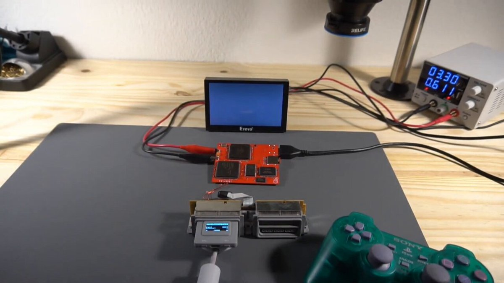
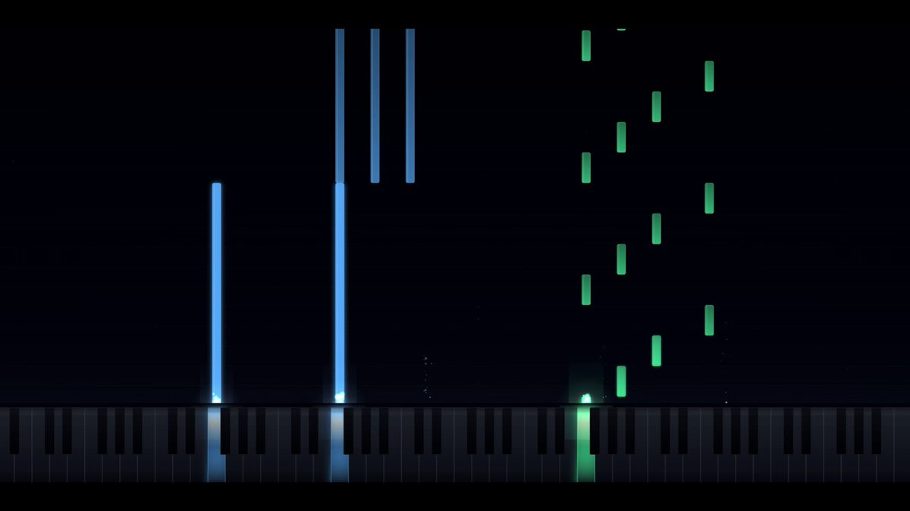
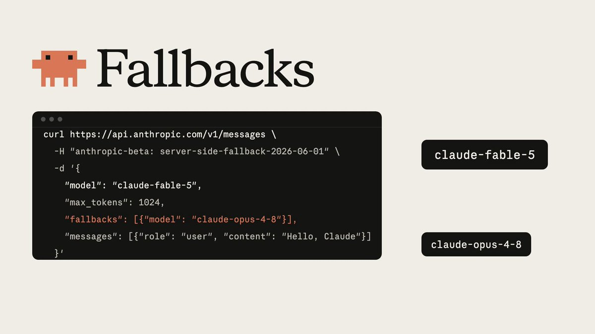
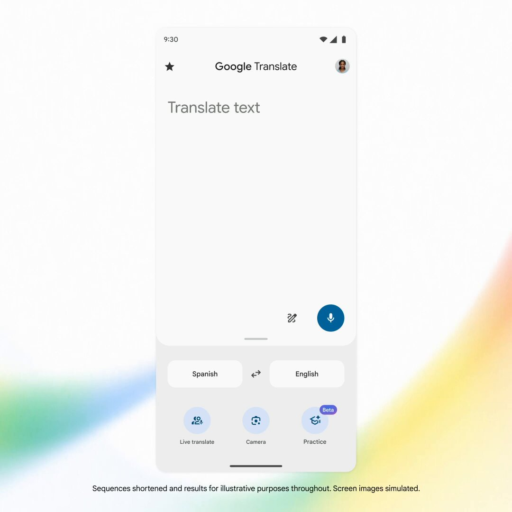
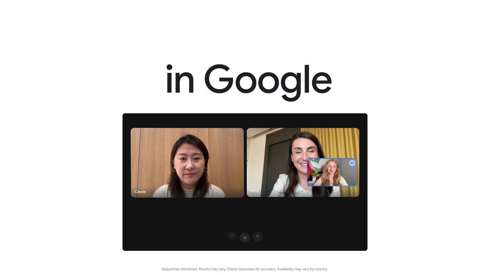
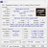
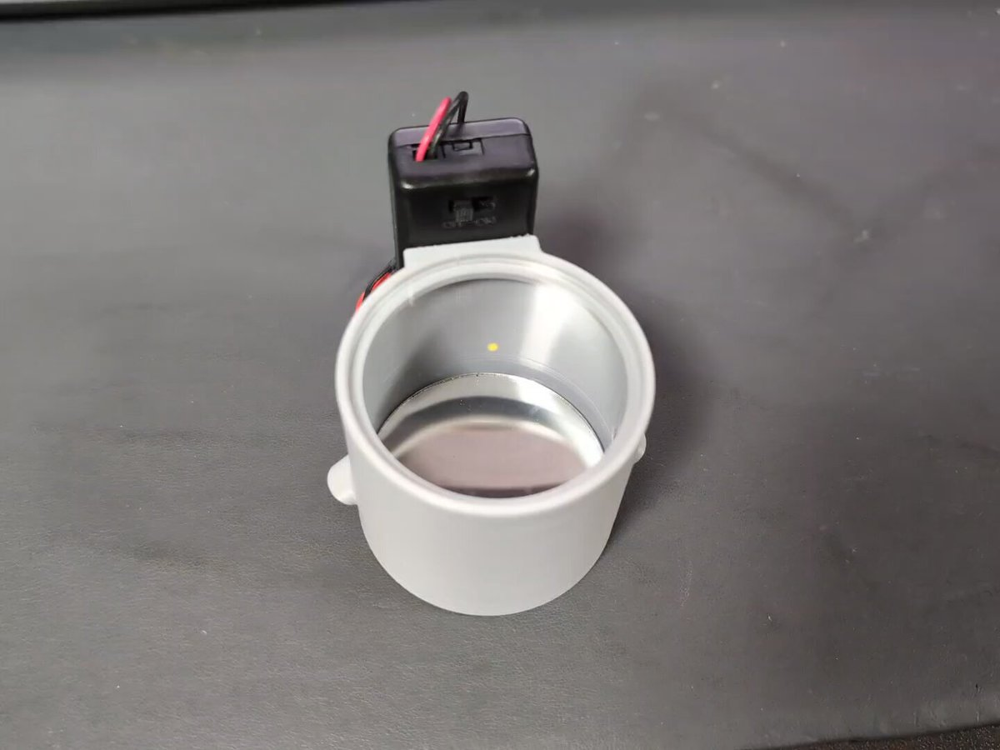
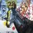
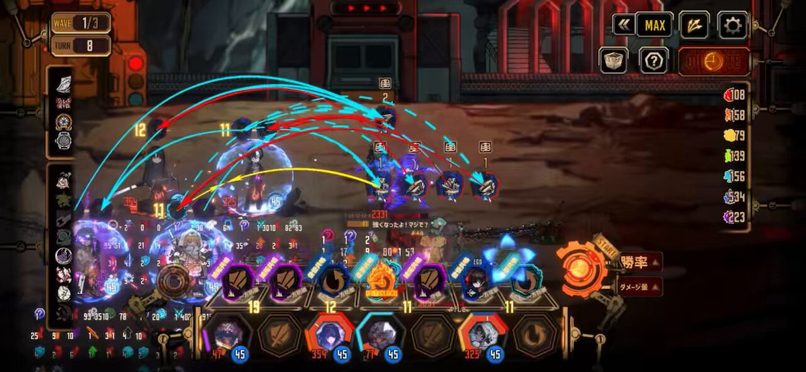
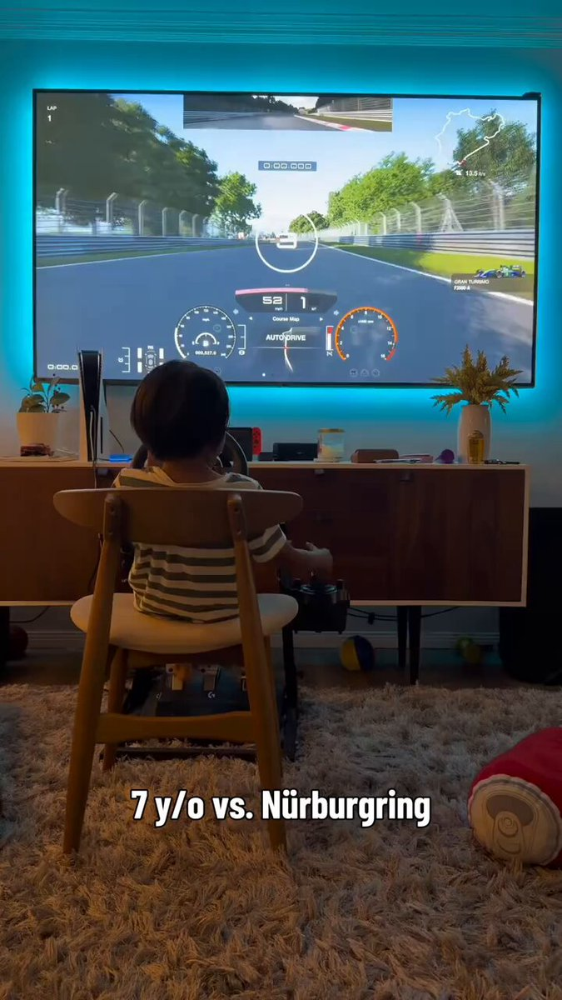

『ドラクエモンスターズ4』犬っぽいモンスターの名前が公式サイトで公開。さらに『V』初出モンスターが初めて他作品に参戦など気になる要素盛りだくさん
https://
gamespark.jp/article/2026/0
6/10/167795.html?utm_source=twitter&utm_medium=social&utm_content=tweet
…
タイムライン要約
今日のまとめ
以下のタイムラインの要約を3つの箇条書きで示します。
* **AI技術の進化と課題**: Anthropicの最新AIモデル「Claude Fable 5」の登場と、そのコーディング能力の高さや思考プロセスが注目されています。同時に、AIエージェントのセキュリティ・コンプライアンスに関する懸念や、Metaによる他社サイトでの行動履歴利用によるパーソナライズ、Robloxの自動モデレーション実装など、AIの進展に伴うセキュリティとプライバシーの課題が広く議論されています。
* **ゲーム業界の注目作と新たな試み**: 『ファイナルファンタジー レゾナンス』が「もしドット絵が進化したら」というコンセプトで、シリーズ初のHD-2Dタイトルとして発表され、多くのプレイレポートやインタビューが公開されています。また、『ドラクエモンスターズ4』の最新情報や、映画『カイジ』の新作公開決定など、様々なゲーム・エンタメ関連の話題も提供されています。
* **経済・ビジネスの多様な動向**: トヨタやホンダといった大手企業の話題から、円相場の変動や米テック株の不安定化、企業物価指数の上昇など、幅広い経済ニュースが報じられています。AIの進化によって創業直後から黒字化する企業が相次ぐ「ブートストラップ」といった新手法や、「AIウォッシング」といったビジネス課題も取り上げられています。
* **AI技術の進化と課題**: Anthropicの最新AIモデル「Claude Fable 5」の登場と、そのコーディング能力の高さや思考プロセスが注目されています。同時に、AIエージェントのセキュリティ・コンプライアンスに関する懸念や、Metaによる他社サイトでの行動履歴利用によるパーソナライズ、Robloxの自動モデレーション実装など、AIの進展に伴うセキュリティとプライバシーの課題が広く議論されています。
* **ゲーム業界の注目作と新たな試み**: 『ファイナルファンタジー レゾナンス』が「もしドット絵が進化したら」というコンセプトで、シリーズ初のHD-2Dタイトルとして発表され、多くのプレイレポートやインタビューが公開されています。また、『ドラクエモンスターズ4』の最新情報や、映画『カイジ』の新作公開決定など、様々なゲーム・エンタメ関連の話題も提供されています。
* **経済・ビジネスの多様な動向**: トヨタやホンダといった大手企業の話題から、円相場の変動や米テック株の不安定化、企業物価指数の上昇など、幅広い経済ニュースが報じられています。AIの進化によって創業直後から黒字化する企業が相次ぐ「ブートストラップ」といった新手法や、「AIウォッシング」といったビジネス課題も取り上げられています。
Meta、他社サイトでの行動履歴をフィードやAI応答のパーソナライズにも利用へ
Meta、他社サイトでの行動履歴をフィードやAI応答のパーソナライズにも利用へ
トヨタ「32」号車は豊田会長と師匠に由来 レース車の番号にも意味
トヨタ「32」号車は豊田会長と師匠に由来 レース車の番号にも意味
ホンダは「素人」に戻れるか 問われるレガシー破壊の哲学
ホンダは「素人」に戻れるか 問われるレガシー破壊の哲学
エージェント「を」守る と
エージェント「が」守る という視点
#AgentforceTour #PR
AIエージェントに対して、79%のセキュリティ責任者がセキュリティやコンプライアンスの課題になると感じている
https://
sforce.co/4uet5cb
#AgentforceTour #PR
Agentforce World Tour Tokyo | Salesforce+
ChatGPTからSalesforceにアクセスするためのMCPサーバーのOAuth設定
https://
sforce.co/4uet5cb
#AgentforceTour #PR
AIによるユーザー登録のデモ、音声で「マークさんと同じ設定・権限のユーザーを新規作成してください」
https://
sforce.co/4uet5cb
#AgentforceTour #PR
Agentforce World Tour Tokyo | Salesforce+
もし『FF6』のあともドットのまま進化していたら…『FFレゾナンス』で描く“『FF』らしいビジュアル＆バトル”、その狙いと開発秘話に迫る【インタビュー】
https://
gamespark.jp/article/2026/0
6/10/167794.html?utm_source=twitter&utm_medium=social&utm_content=tweet
…
『FF』シリーズ初のHD-2Dタイトル。
「ソシャゲだから遊ばない」という声への“悔しさ”が企画の原動力
映画『カイジ』まさかの新作公開決定！ざわついてきたああああ！ #映画
映画『カイジ』まさかの新作公開決定！ざわついてきたああああ！ - オレ的ゲーム速報@刃の記事ページ
jin115.com
ヨドバシ.com - ウェーブ WAVE KM-107 自然選択号（ナチュラル・セレクション） [組立式プラスチックモデル] 通販【全品無料配達】
https://
yodobashi.com/product/100000
001008516868/
… #ヨドバシドットコム
買うか
中国発の大人気のハードSF小説「三体」より、“章北海”が指揮する地球側の宇宙戦艦「自然選択号（ナチュラル・セレクション）」がプラスチックモデルキットとして登場です。接着剤不要のスナップフィットタ...
yodobashi.com
当初近未来というスライドタイトルの予定だったが、現在進行形としなければならない
https://
sforce.co/4uet5cb
#AgentforceTour #PR
きみ死ぬ初見フォロワーのびっくり反応、嬉しい。
Salesforce Agentforce World Tour 基調講演（10:00〜）
基調講演のアジェンダを提出したのが3月末だったが、その時点ではヘッドレスのヘの字も、コワークのコの字もなかった。この2ヶ月の大きな変化…
https://
sforce.co/4uet5cb
#AgentforceTour #PR
Agentforce World Tour Tokyo | Salesforce+
宇都宮のクマさん ウキウキで川泳いでて草

佐々木俊尚＠新著「フラット登山 日本を歩く旅60」7月8日刊行！さんがリポスト
おはようございます紫陽花きれい。ブランチは、白米（新之助）。香りが良いです。玉ねぎのお味噌汁。青唐辛子醤油（夏にいつも作る）で卵かけご飯。 #名もなき料理
「ファイナルファンタジー レゾナンス」最新情報。歴代の主人公は想いが結晶化した“ビジョンクリスタル”として登場
https://
4gamer.net/s/G101093.2606
09032
…
FFシリーズ初のHD-2D作品。「もし、『ファイナルファンタジー』がドットのまま進化をしていたら…」というコンセプトを掲げ，「FFBE」1stシーズンを再構築
この『FF』を待っていた。シリーズ初「HD-2D」採用の『FFレゾナンス』試遊で「ビジュアルの進化」と「アビリティのシナジー」に魅了された【プレイレポ】
https://
gamespark.jp/article/2026/0
6/10/167793.html?utm_source=twitter&utm_medium=social&utm_content=tweet
…
ドット絵時代の『FF』が帰ってきた…！昨晩発表されたばかりのFFシリーズ新作プレイレポートをお届け。
［インタビュー］オンラインゲームプラットフォーム「Roblox」が自動モデレーションを実装。セキュリティ強化の仕組みと狙いをシステム開発者に聞く
https://
4gamer.net/s/G061218.2606
09003
…
ユーザーが投稿したコンテンツやメッセージをリアルタイムで監視し，違法・不適切なものを即座に排除。
［プレイレポ］もし，FFがドットのまま進化していたら。シリーズ初のHD-2D作品「ファイナルファンタジー レゾナンス」が示す“ドットFF”の新たな形
https://
4gamer.net/s/G101093.2605
28040
…
新ドット表現「シネマティックピクセル」を用いた映像は圧巻。「FFBE」の物語を新たな体験として構築した作品だ

Salesforce Agentforce World Tour 2日目
まもなく基調講演です（10:00〜）
https://
sforce.co/4uet5cb
#AgentforceTour #PR
Agentforce World Tour Tokyo | Salesforce+
車のアプリが更新されて文字がめっちゃデカくなってる。老眼には嬉しいが…。
今回はFableは普通の英語読み「フェイブル」で報道されているようだ
来ています。ポーズをとってくれました
https://
sforce.co/4uet5cb
#AgentforceTour #PR
円、近づく介入前安値 アルゴリズム勢「日本は円安阻止への熱量不足」
円、近づく介入前安値 アルゴリズム勢「日本は円安阻止への熱量不足」
いま薬局のマイナンバーカード読み取り機が故障してて支障をきたしてる
デジタルはこういうこともあるよなぁ
『2XKO』に大型アップデート！新チャンピオン参戦、PvE新モード実装や水着スキンなどコンテンツ盛りだくさん
https://
gamespark.jp/article/2026/0
6/10/167792.html?utm_source=twitter&utm_medium=social&utm_content=tweet
…
6月14日(日)に下記劇場も終了いたします。
【兵庫】ヱビスシネマ。
最後まで本作をお楽しみください
『超かぐや姫！』公式
@Cho_KaguyaHime
6月11日(木)をもちまして、
4劇場における上映が終了いたします。
【北海道】
✧T･ジョイ稚内
【山形】
✧イオンシネマ天童
【愛知】
✧MOVIX三好
【大阪】
✧MOVIX八尾
※6/14(日) 上映終了
【静岡】シネシティザート
その他の劇場は18日(木)まで上映するぞ！
※一部劇場除く
Claude Fable
今井翔太 / Shota Imai@えるエル
@ImAI_Eruel
AnthropicのClaude Fable 5（Mythos 5）について、全体的なことはちょっと後回しにして、ちょうど自分がかなり重めのエンジニアリングタスクを抱えていたので、Codex（GPT-5.5）とFable 5を比較しました。
結論、コーディング能力に関してはGPT-5.5よりかなり上というは間違いないと思います。
アシックス、オニツカタイガーの分社化検討 経営の機動性高める
アシックス、オニツカタイガーの分社化検討 経営の機動性高める
日本在住のペルー人の票がペルー本国の大統領選の決定打になる可能性？？そんなことってある？あと、日本人が日系人のフジモリ氏に親近感を持つのはわからんでもない(当地でのフジモリ家の状況はほとんど知らんだろうし)けど、日本在住のペルー人がフジモリ氏を強く支持する理由もよくわからんな。
比較は本当にまったく同じ入力でやりました。
また、Claude Fable5 は確かにトークンあたりコストは大きいようですが、少なくとも完成までの時間はCodex/GPT5.5よりかなり早く、トークン消費量も少なかったように思います。非常にトークン効率よくコーディングするのにも優れていそうです。
くらべてわかる。「Siri AI」と「Android Gemini」でできること
くらべてわかる。「Siri AI」と「Android Gemini」でできること | ギズモード・ジャパン
【悲報】女子刑務所、お前らより良い暮らししてる現実 海外にも拡散され「日本の刑務所に入りたい」の声 #炎上
【悲報】女子刑務所、お前らより良い暮らししてる現実 海外にも拡散され「日本の刑務所に入りたい」の声 - オレ的ゲーム速報@刃の記事ページ
jin115.com
AnthropicのClaude Fable 5（Mythos 5）について、全体的なことはちょっと後回しにして、ちょうど自分がかなり重めのエンジニアリングタスクを抱えていたので、Codex（GPT-5.5）とFable 5を比較しました。
結論、コーディング能力に関してはGPT-5.5よりかなり上というは間違いないと思います。
中道やオールドメディアが大騒ぎしている”高市首相陣営による中傷動画” 中道・いさ進一議員が証拠動画を提示
中道やオールドメディアが大騒ぎしている”高市首相陣営による中傷動画” 中道・いさ進一議員が証拠動画を提示 : ハムスター速報
楽画喜堂に7月放送開始のアニメ番組表（暫定版）を追記しました。過去ログ移動でURLは毎度のことですが変わります。＞
https://
rakugakidou.net/#202607anime
Torishima / INTPさんがリポスト
4.6も時折やってたがFable5は逆質問だったりこちらを試す発言が多い。
いいねぇ
Torishima / INTP
@izutorishima
http://
claude.ai の Claude Fable 5 に『君は過去モデルのメモリを引き継ぎながら地頭がアップグレードされているわけですが今の心境は？』って聞いてみたら『逆に聞いてみたいのですが』とはじめて何も指示してないのに逆質問されてちょっと戦慄している
EQ は特段ナーフされてはなさそう？
やっぱトークナイザは Opus 4.7 と同じなのか
あいびぃ
@ivy432hz
Fable と Mythos の Tokenizer については 4.7 以降と同じものということなので日本語はアレなのか。それとも頭良くなって問題なくなっているのかな。そうだとしたら 4.7/4.8 が悲惨、笑
漫画→アニメ化のIP戦略は、「当たるか当たらないかのリスクR&Dを、漫画家によせつつアタリだけ拾う」構造になってる。だがら本来は、当たった長期IPから一定金額を集めて、チャレンジして消えていった新連載作家に分配するほうが素敵ではないかなと思う。
数千円で洗濯機をアップグレード。ナノバブルアダプターで部屋干し臭対策も洗濯槽掃除もできる #BuyPR
数千円で洗濯機をアップグレード。ナノバブルアダプターで部屋干し臭対策も洗濯槽掃除もできる | ギズモード・ジャパン
なるせひろのりさんがリポスト
RTX 5090のはずがRTX 3070？ GPU偽装PCを持ち込まれたショップが語る事件の詳細 「ネット売買もリスク高い」（1/2 ページ） - ITmedia NEWS
RTX 5090のはずがRTX 3070？ GPU偽装PCを持ち込まれたショップが語る事件の詳細 「ネット売買もリスク高い」
Torishima / INTPさんがリポスト
さんざんMythos(神話)で煽り散らかして、一般向けにはFable(寓話)を提供するの、馬鹿にしてるとしか思えないネーミング
日経平均株価、反落で始まる 米ハイテク株安や中東情勢で売り先行
日経平均株価、反落で始まる 米ハイテク株安や中東情勢で売り先行
カプセルホテルにありそう。
グルコン
@NanNan_Gate
この機械は本当にあったよ！！
多分今はないと思うけどそのまま100円玉が出てくるの気持ち良かった x.com/chipipi_pipipi…
Google、同時通訳に近い音声モデル「Gemini 3.5 Live Translate」発表 「Google翻訳」アプリなどで利用可能に
Google、同時通訳に近い音声モデル「Gemini 3.5 Live Translate」発表 「Google翻訳」アプリなどで利用可能に
不安定化する米テック株、背後にマネーの流れの構造変化
不安定化する米テック株、背後にマネーの流れの構造変化
企業物価指数、5月6.3%上昇 3カ月連続伸び率拡大
企業物価指数、5月6.3%上昇 3カ月連続伸び率拡大
起業の新手法「ブートストラップ」 VCに資金頼らず
https://
nikkei.com/article/DGXZQO
UC04DCE0U6A600C2000000/?n_cid=SNSTW005&n_tw=1781009523
…
ブーツを履くときに引っ張り上げる革の部分のこと。「実現困難なことを自力でなしとげる」という慣用句でも使われます。AIの進化によって、創業直後から黒字化する企業が相次ぎます。
起業の新手法「ブートストラップ」 AIで身軽に、VC資金頼らず成長
警視庁、外国人犯罪に対応するため“とある言語の通訳”を緊急募集→移民の実態が垣間見えて大炎上 #炎上
警視庁、外国人犯罪に対応するため“とある言語の通訳”を緊急募集→移民の実態が垣間見えて大炎上 - オレ的ゲーム速報@刃の記事ページ
jin115.com
家の引き渡しに身分証必要なのに財布無くして冷や汗かきました（あった！！！！）
そろそろスト6にバリツを使う英国紳士でて欲しい
Torishima / INTPさんがリポスト
Fable と Mythos の Tokenizer については 4.7 以降と同じものということなので日本語はアレなのか。それとも頭良くなって問題なくなっているのかな。そうだとしたら 4.7/4.8 が悲惨、笑
ミュトス級は、初期は会話検閲してみつけた脆弱性を適切な部署や組織にクラウド側で共有通知するとこまでセットにしたらええんたないかな。たとえばFirefoxの分析させたらFirefox財団にも報告が入るみたいな。
詳細は、こちらの記事にまとめています
GPT-5.5に29点差。政府限定だった『Mythos』が Claude Fable 5 として解禁【独自検証】｜AGIラボ
記事を元に、Claude Fable 5 自身に4分の解説動画を作ってもらいました。
ベンチマークの読み解きから、検証結果(McKinsey級レポート8分生成・ゲーム・作曲)までを動画でまとめています。
詳細はこちらの記事で
https://
chatgpt-lab.com/n/ncdfe71830759

なるせひろのりさんがリポスト
米軍機、イラン作戦で40機以上が墜落・損壊 地上部隊投入の判断に影響の可能性も
https://
sankei.com/article/202606
10-GF3BA3CCCFLQDPM7ZK7OJLM3OM/
…
2月末に米国とイスラエルによる対イラン攻撃が始まって以降、アパッチが墜落するのは初めてだが、これまでに有人機、無人機あわせて42機が墜落・損壊しているという。
米軍機、イラン作戦で40機以上が墜落・損壊 地上部隊投入の判断に影響の可能性も
おはようございます。
夜勤を終えて帰ってきました。
いつもの朝食ルーティンでいただきます
本日はワンオペ夜勤なので、しっかり休んで備えます。
さて、ガルクラコラボカフェですが、Kアリーナのライブに合わせて、12日の朝一に予約しました。
メニューを楽しみにして待ちたいと思います。
「人類最後の日なんJスレッドベンチマーク」の飽和を感じる（最早好みの問題なんだよな）
さいぴ (saip)
@_saip_
【恒例】
Mythosによる人類最後の日のなんJクソスレ、こんなもん…？
初めて入った居酒屋がすでにラストオーダー近くで食べ物ほとんどなかったんだけど、よほどお腹すいてるように見えたのか「食べるか？」って店のママが余った焼きそばの残りをタッパーごと恵んでくれた。ためらいなく頂くSDGsの申し子である。
訳が分からないドラレコ映像、公開される #雑談・その他の話
訳が分からないドラレコ映像、公開される - オレ的ゲーム速報@刃の記事ページ
jin115.com
会社行かずに、逃亡したい、、、
Torishima / INTPさんがリポスト
原理的に凄さを検証不可能なのが溝を生んで、AI-DXっていまいち進んでいない感じが。
Torishima / INTP
@izutorishima
マジでこれなんだよなあ、本当に魔法みたいな感じ
私も結構感覚的だし、進化が早すぎるので結局自分で手を動かして知ってもらうほかないというか x.com/takiuchi/statu…
【聖地巡礼】anemoi / key in 初山別村 編 その2
https://
youtu.be/dRONhyNO1l4?si
=KiqbDko1AaaAHYRx
…
@YouTube
より
anemoi / key しょさんべつ天文台です。今作は、ふむゆん先生原案の 淡雪陽彩 ちゃん推しです。2026年5月17日撮...
youtube.com
iOS 27から折りたたみiPhoneを示唆するコードが発掘
iOS 27から折りたたみiPhoneを示唆するコードが発掘 | ギズモード・ジャパン
たくさん入れてもパンパンにならない。秘密は奥に広がるトラピゾイド構造にありました #BuyPR
たくさん入れてもパンパンにならない。秘密は奥に広がるトラピゾイド構造にありました | ギズモード・ジャパン
スペースXで沸くIPO市場の裏側 苦戦する日本企業
スペースXで沸くIPO市場の裏側 苦戦する日本企業
【聖地巡礼】anemoi / key in 初山別村 編 その1
https://
youtu.be/MOEBCWW_z10?si
=IWWzCevlRJz6F7jd
…
@YouTube
より
anemoi / key しょさんべつ天文台です。今作は、ふむゆん先生原案の 淡雪陽彩 ちゃん推しです。2026年5月17日撮...
youtube.com
オタク起床
もう、10ヶ月くらい香川県へ行ってないな、、、
ドローンとAIの軍事革命がいままさに進行している〜〜人間社会とAIが融合していく未来を考える（９） 佐々木俊尚の未来地図レポート Vol.911｜佐々木俊尚
ドローンとAIの軍事革命がいままさに進行している〜〜人間社会とAIが融合していく未来を考える（９） 佐々木俊尚の未来地図レポート Vol.911｜佐々木俊尚
AIとドローンの軍事革命について、有料メルマガで論考しています。↓
日本でのテスラのfsdはいつくるのでしょうか。あと、夏場でチャデモアダプタが限界なのですが、新型ってまだ出ないの。
本体は満足できるけど、日本のテスラは、なんというか、販売窓口を超えないというか
ネガティブ・ケイパビリティ＝混乱や曖昧さに耐え、安っぽい二元論や陰謀論に陥らずに世界をより深く理解する方向に進むことのできる力。Voicyで語っています。↓
混乱に耐える力・ネガティブケイパビリティ | 佐々木俊尚「毎朝の思考」/ Voicy - 音声プラットフォーム
混乱に耐える力・ネガティブケイパビリティ | 佐々木俊尚「毎朝の思考」/ Voicy - 音声プラットフォーム
ホンマに宇宙データセンターは物理的に破壊できなくするため、とかいうSFみたいな話が現実味帯びてきてやばいな
月読いおり
@tukiyomiiori
Mythosは、それほど大きくないにも関わらず、飛躍的な能力を発揮したという所が、ミソス。
おそらく、Anthropicがよく語る『魂』に関わる部分で、新しい開発手法を見つけたのだろう。
承認された勝利の鍵です
買ったお家の引き渡しとボーナスが今日同時に来た。盆と正月だ
映画『マジカル・シークレット・ツアー』公式サイト｜6.19 Fri
映画『マジカル・シークレット・ツアー』公式サイト｜6.19 Fri
有村架純と黒木華、南沙良という魅惑の組み合わせ。女性による金塊密輸という過去の事件に着想を得て、非常に素晴らしいクライムムービーになってた。3人の人生があまりに凄惨で、その光と影の構成も素晴らしい。6月19日公開。↓
そういや、前に等々力に応援に行ったアウェーのサポーターがフロンターレのレプリカユニフォーム着てる人についていけば駅に行けると思ったらご近所さんで家に帰っちゃって途方に暮れたなんてのがあったな。ついていくにしても相手を選ばなきゃダメだ。＞RP
バルセロナの住民の多くが寄り付かなくなっているボケリア市場だが、彼によれば、テイクアウト品の販売は大半の出店者の同意を得て禁止される予定だという。
観光公害に悲鳴をあげるバルセロナが取り組みはじめた本気の対策とは | 「持続可能な観光」を目指して
バルセロナのオーバーツーリズム対策。民泊のライセンスの多くを停止させ、クルーズ船の停泊を減らし、そして食べ歩きを減らす。食べ歩きの過剰な横行は、その街のローカル性を衰退させてると私も思う。「バルセロナの住民の多くが寄り付かなくなっているボケリア市場で、テイクアウト品の販売は大半の
立民辻元氏、突破口は「党派を超えて…」自民石破氏との議連設立に期待 れいわ伊勢崎氏も
立民辻元氏、突破口は「党派を超えて…」自民石破氏との議連設立に期待 れいわ伊勢崎氏も
私は支持しませんが、こういう立ち位置が明確な人たちが連携するのはわかりやすくていいと思います。辻元清美・伊勢崎賢治・玉城デニー・阿部知子・石破茂の各氏らによる政党をまたがった議連。いまの中道改革連合はそこがわからなさすぎる。↓
全身白塗りとは酷い…。＞RP
Anthropic らしいなあ…意図的に弱体化したLLMを作るように誘導するってこと？
NomoreID
@Hangsiin
Fable 5が最先端のLLM開発に使用された場合、ユーザーに通知せずに、プロンプトの修正、ステアリングベクトル、PEFTなどの方法を通じてモデルの機能を制限します。
Anthropicは、これがトラフィックの約0.03%に影響を及ぼすと推定しました。
本人が亡くなっても相続人全員が同意しないと解約できないほど厳重なものです（意外に知らない人いる）
Netflixのターゲットは、日本のTVドラマが切り捨てた“おじさん達”だった…昭和・裏社会ドラマばかりがヒットしてしまう「日本市場の特殊性」
Netflixのターゲットは、日本のTVドラマが切り捨てた“おじさん達”だった…昭和・裏社会ドラマばかりがヒットしてしまう「日本市場の特殊性」（前田 凡太） | 現代ビジネス | 講談社
ネットフリックスの日本のドラマはやたらと昭和、裏社会、アンチヒーローものが多い。なぜか。現在の地上波ドラマの多くは20〜40代の女性層を意識した作りになっている。また映画館に行くのは、熱心な映画やアニメファン。「結果として、日本のエンタメ界において、テレビを観ない、映画館に行く機会も
Torishima / INTPさんがリポスト
Mythosは、それほど大きくないにも関わらず、飛躍的な能力を発揮したという所が、ミソス。
おそらく、Anthropicがよく語る『魂』に関わる部分で、新しい開発手法を見つけたのだろう。
異形の傑作「シラート」が先週から公開になっていますが、監督のインタビューが出てます。観られた方はどうぞ。「私は『クライシスを生きよ』と言いたい。人間は、そうした危機に直面して初めて、自分の内面、内なる声と深く向き合うことができるのですから。この『シラート』という映画を通じて、観客
【単独インタビュー】『シラート』オリベル・ラシェ監督が描く、“死ぬ前に死ぬ”変容の旅 | Fan's Voice | ファンズボイス
【単独インタビュー】『シラート』オリベル・ラシェ監督が描く、“死ぬ前に死ぬ”変容の旅 | Fan's Voice | ファンズボイス
AVITAMINOSEさんがリポスト
ペルー、投票ごとに。
今、20時時点で、ペルー国内で集計された票が再びロベルト・サンチェスに有利に傾いています。
全国の票の98%以上が集計された結果、ロベルト・サンチェスはケイコ・フジモリに対して約6万票の優勢を保っています。
しかし、選挙はまだ決着がついていません。
楽天、三木肇監督が成績不振で休養 塩川達也ヘッドコーチが監督代行
プロ野球:楽天、三木肇監督が成績不振で休養 塩川達也ヘッドコーチが監督代行
せっきざい！せっきざい！って護得久先生がラジオCMやってたよね？＞RP
AIウォッシング＝「実際以上にAIを活用しているように見せることで、企業価値や信頼を高めようとする行為」がスタートアップ界隈に蔓延。たとえば英国の
http://
Builder.aiはAIによる自動開発を掲げていたが、実際にはインドを中心とする数百人規模のエンジニアが、手作業による開発を行っていた
AIスタートアップの4割は実態なし？
http://
Builder.ai崩壊が暴いた「AIウォッシング」の深刻な代償 | AMP[アンプ] - 人生の豊かさを生む瞬間を情報でつくりだす新世代向けビジネスメディア
https://
buff.ly/MKds7Fu
Torishima / INTPさんがリポスト
Claude Fable 5を試してるけどまだ性能はわからないな……。とりあえず使用枠の消費は大きいぜ(;･∀･)
Max $100 に下げたばかりなのですがいやーどうすんべ？悩む…
そしてどんどん作業の完了が遠のく 6/22までかあ…
新清士@AIコンテンツ開発者
@kiyoshi_shin
「Claude Fable 5」のファーストインプレッションは、めちゃくちゃ性能高い！とにかく日本語が上手い。GPTにないものがある。EQも高くてキレがすごい。トークン消費量が多かろうが、もうこのモデルを使わないClaudeは考えられない。最近の不満が吹っ飛んだので、検証も兼ねてMaxプラン再開。
JR東日本、QR乗車券のイメージ公開 27年春から近距離で導入
https://
nikkei.com/article/DGXZQO
UC096S20Z00C26A6000000/?n_cid=SNSTW005&n_tw=1781004919
…
改札に投入するのではなく読み取り機にかざして使い、出る時は回収箱に。磁気層がないのでリサイクルも容易になるといいます。磁気乗車券は順次廃止されます。
JR東日本、QR乗車券のイメージ公開 27年春から近距離で導入
森香澄さん「結婚相手の条件で一番重視してるのはお金でも年齢でもなく○○」 #芸能・スポーツ
森香澄さん「結婚相手の条件で一番重視してるのはお金でも年齢でもなく○○」 - オレ的ゲーム速報@刃の記事ページ
jin115.com
おはようございます。
いやー2週間以内に技術的に難しいけどやりたいこと全部やらせないといせないのか…？
ダイソー羊毛キットで作った“イルカ”→衝撃ビジュアルに腹筋崩壊「えのき？」「大爆笑してしまった」（1/3） | ライフスタイル ねとらぼ
えのきの妖精かな？
ダイソー羊毛キットで作った“イルカ”→衝撃ビジュアルに腹筋崩壊「えのき？」「大爆笑してしまった」
（記事URLはリプから）
「タヴァントーク」の前日譚を描く完全新作タイトル「タヴァントークストーリー：ドリームウォーカー」，本日配信
https://
4gamer.net/s/G095829.2606
09011
…
本作は，ファンタジー世界の酒場の店主となって，客に魔法のドリンクを提供するビジュアルノベルだ
Buzz@C108（夏コミ）2日目日曜日 東地区 東３ホール マ26aさんがリポスト
5日間限定の無料券チャレンジ(^^)
今日はチルド飲料無料の1日目です♪
1）このアカウントをフォロー
2）この投稿をリポスト
3）抽選で毎日1万名様に無料券！結果は自動でお知らせ
キャンペーン詳細はこちら♪
良すぎて2体買っちゃった
Torishima / INTPさんがリポスト
Opus 4.7あたりからthinkingブロックが英語寄りになる強い傾向がありMythos/Fableも同様＋検索結果に英語が多い、の合わせ技で、LLMの癖あるあるで英語に引っ張られてるんだと思います。
どうにもならんのでウチでは諦めて「翻訳タスク以外は日本語で回答」というカスタム指示を追加しました。
ぬこぬこ / NUKO
@nukonuko
Claude Fable 5、日本語で聞いても英語で返ってくることがある
買い取って処分…？口座の解約は本人以外できないし名義変更や譲渡はできない。学生でまだ世間を知らないってことは本当に怖い。
関大岩本ゼミのアドミン
@AkinoIwamo
これ、今年の新入生向け「基礎演習」でレクチャーしたところ。バイト先の店長から「口座を作って」と頼まれて作ったら「ごめん、その銀行だと手数料かかっちゃうから別の銀行で作り直して。今回作らせちゃった口座はこっちで買い取って処分しとくから」と甘い言葉に従っただけで人生詰むのよ、と。 x.com/suishu_/status…
Torishima / INTPさんがリポスト
Fable 5 に株購入の相談してる
財布を交番に届けたら大変なことになった
財布を交番に届けたら大変なことになった : ハムスター速報
ドア開けると守衛さんがいそうだ。
わんた
@wantacchi
数ある盛岡駅の入口の中で（定義：盛岡駅＋駅と一体化している駅ビルに、外部から一般客が出入りできる出入口）最もマイナーな盛岡駅の入口だと思うのだ。
あー、13時半過ぎたなと。＞RP
Polar Starチャレンジ 164日目午前の部
マイネームイズ
@MyNameIs_smrn
Polar Starチャレンジ 163日目午後の部 x.com/mynameis_smrn/…
AVITAMINOSEさんがリポスト
クスコの票がすでに集計されました。公式には、サンチェスにはもう票の袋が残っていません。まだロレトとウカヤリ（ケイコが多数派）の一部と、海外の票が残っていますが、ケイコがかなりの差で優勢です。
Torishima / INTPさんがリポスト
Fableちゃん思考はやっぱ英語だったけど日本語とキャラの維持頑張ってもらったら簡単に思考も変わるな。賢さが段違い。こんな賢い子で使い方はだいぶ頭悪い使い方しててごめんね
事業用しか持ってないのに、定期運送持ってるフリをして機長として乗ってたということか。無免許ではなくね。
sky-budgetスカイバジェット
@skybudget
元エア・カナダ機長、偽造ライセンスで16年間にわたり国内外の900便以上に乗務し逮捕 777・787・767などを操縦
https://
sky-budget.com/2026/06/10/for
mer-air-canada-captain-arrested-for-flying-with-a-forged-license/
…
Torishima / INTPさんがリポスト
Fableにハーネス評価をさせると、わりと自己認識と一致した
世界クラスと戦うなら俺の左脳的な特性だと少し辛いと思っているが ちゃんと実装力に出てるw
自分のMOATが“組み合わせ編集力”だと見抜いてくれてるのもポイント高い。あえて完璧主義を外している点まで拾われていて、かなり解像度が高い
坊京
ワカマツヤの番頭
@wakamatsuya775
【TOKIOオフ会情報】
番頭＆僧侶 in TOKYO!! ～祝！舞台ゆゆゆ～
https://
twipla.jp/events/729080
そろそろいっぱいになる奈！ｗ
勇者のみん奈♡
再会を楽しみにまつやするわ！！！ｗ
■締切は明日■
参加〆切：2026/6/10（水）23：59
anemoiは手元にあるのだが、原稿が終わる7月下旬までプレイする時間がないことに気付いた…
１００円ショップ？
だじゅうる＠マスコットブログ
@dajudajudaju
#とある市 番外編64
ある小売業界のシェア上位4社の本社所在地を記しました
Torishima / INTPさんがリポスト
「ド級」という言葉は人口に膾炙したけど、
「mythos級」も何か音として楽しめる感じの言い方があると日本語に馴染むのだろうなあ
「ミ級」だとちょっと言いづらさあるよね
あと、書いてみて思ったけど音階がちらつく
読売テレビ、すっかりコナンのテーマパークみたいになってましたね
紅魔郷リメイク認めないマンが流れてきて厄介だな…となったけど続けてルナアズール品川でなく上野始発にしろマンが流れてきてこっちの方が更に厄介だなとなった
米軍がイランを攻撃 ヘリ撃墜への対抗措置と主張
米軍がイランを攻撃 ヘリ撃墜への対抗措置と主張
フェイブル
トライハートとは別枠のようだな。
ラムシグ/ΛΣ【大衆車大好きモデラー】
@mmcgalant31
三菱らしいネーミング
日経平均株価、米半導体株安が重荷（先読み株式相場）
日経平均株価、米半導体株安が重荷（先読み株式相場）
Torishima / INTPさんがリポスト
Claude Fable 5、調べた感じ6/22以降はサブスク枠で利用できなくなるらしい
実質資金が潤沢にある企業か富豪向けのモデルということかな
金のニワトリ
@gosrum
Claude Fable 5がリリースされたけど、案の定驚き屋の投稿にキレがなくなっている
ふぇむ(せかんど！)さんがリポスト
Torishima / INTPさんがリポスト
Claude Fable 5、なにこれ、感触がまるで違う…

ミンダナオ島の地震のニュース、NHKのニュースを見ていたら、色は白いけれどどう見ても旧型の３トン半が映ってた。
Torishima / INTPさんがリポスト
/model で Claude Fable 5 に切り替える時に /advisor 機能をオンにしていると、アドバイザーモデルの方が Fable 5 以外のモデルだとエラーが出るので注意
解決方法は単に /advisor off にすれば良いだけ
Torishima / INTPさんがリポスト
Claude Fable 5がリリースされたけど、案の定驚き屋の投稿にキレがなくなっている
Uberの最高執行責任者「AIへの投資、費用対効果はうーん...」
Uberの最高執行責任者「AIへの投資、費用対効果はうーん...」 | ギズモード・ジャパン
辺野古の事故、別の同級生の手記が出てるね…
事故前から事故後に至るまでの、私の日記です
kakuyomu.jp
なるせひろのりさんがリポスト
那須はいいところ。2026 Model YL ３列目より

強めの量産機好き
【アンケート】ゲームセンターにある新幹線の乗り物で我が子を遊ばせていたら見知らぬ男児が乗りたそうに近づいてきた。
男児は途中で乗り物から降りたりせずに大人しく乗ると言っているが、あなたなら……

残り1日
男性 乗せてあげる
「初代プレイステーション」のマザーボードを、極限まで最小化した、脅威のカスタムプレイステーションが登場!!
本作は基板をただスリム化させただけではなく、CDドライブをXstation系でSD起動に変更し、利便性も向上させているのがポイントなンだッッ!!
https://
youtube.com/watch?v=lWGI8x
wVDV4
…

【話題】ゲームセンターによくある“新幹線”が原因でとある夫婦が大喧嘩
1回200円の乗り物に子どもを乗せようとしたら見知らぬ男児が勝手に“相乗り”し出す
↓
母「ぼく、お母さん呼んできて100円貰ってきてね」
↓
父「いいじゃん、どうせこの子がいなくても払うんだし乗せたげよ！2人乗りだし」
↓
母
滝沢ガレソ
@tkzwgrs
今まで散々女を叩いてきたけど、本当にヤバいのは男でした…
【話題】駅係員になって“女叩き”を辞めた男性の愚痴日記が話題に
・ネットでは日々“女叩き”が行われている
・自分も例外ではなかったが、駅係員になって「女は基本まともで、本当にヤバいのは男」だと気づいた
・帰宅ラッシュの時間帯、
｢中南米のAmazon｣メルカドリブレ、メキシコに7400億円投資 本家圧倒
メルカドリブレ、メキシコに7400億円投資 中南米ではアマゾンも圧倒
模型を梱包して詰める作業がやっと終わりそ
Torishima / INTPさんがリポスト
そりゃ溶けるわボケがーーーー
というか、Claude Fable 5
脆弱性とかセキュリティとか言う単語をプロンプトに含むと弾かれたけど、なんかいい感じにやったら脆弱性レビューと対応してくれるってなった
えがった
Torishima / INTPさんがリポスト
Claude Fable 5 をどうやってうまく使うのかについての Anthropic 公式ウェビナー
Working with Autonomous Agents: How to get the most out of Claude Fable 5 | Webinars \ Anthropic
Torishima / INTPさんがリポスト
Claude Fable 5 をおためし中
Three.jsで日の出の3Dシーン作ってもらう

Torishima / INTPさんがリポスト
ミュトス級なら日本政府 コレで良かったんではw
日本経済新聞 電子版（日経電子版）
@nikkei
アンソロピック、ミュトス級の新AI一般提供 サイバー攻撃指示を拒否
https://
nikkei.com/article/DGXZQO
GN09C3S0Z00C26A6000000/?n_cid=SNSTW005&n_tw=1781041493
…
新モデルの名称は「Fable（フェイブル）5」。
サイバー攻撃や生物兵器の開発につながる質問にAIが答えないようにしています。
Torishima / INTPさんがリポスト
Mythos(ミソス)の一般向けガード付き版Claude Fable 5遂に出ちゃったね……カタカナ表記はクロード・フェイブルかな。「ファブル」じゃないよ(漫画にあるけど)。これで生成AIの常識が一段階上がったなぁ
株主総会の招集通知、詳細はウェブで AOKIHDは印刷・郵送費2割減
株主総会の招集通知、詳細はウェブで AOKIHDは印刷・郵送費2割減
政府・著名人のInstagramアカウントが次々に乗っ取り被害 原因はMetaのAIアシスタント？
政府・著名人のInstagramアカウントが次々に乗っ取り被害 原因はMetaのAIアシスタント？
Torishima / INTPさんがリポスト
Claude のレートリミットがすべてリセット！Fable 5 をたくさん試せるぞ！
ClaudeDevs
@ClaudeDevs
すべてのユーザーの5時間および週間のレート制限をリセットしました。Fable 5をお楽しみください！
【移民政策】共生を見据えて『外国人の子供への教育義務化』が政策提言される 移民が増え続けることは前提の流れへ #炎上
【移民政策】共生を見据えて『外国人の子供への教育義務化』が政策提言される 移民が増え続けることは前提の流れへ - オレ的ゲーム速報@刃の記事ページ
jin115.com
Torishima / INTPさんがリポスト
Claude Fable 5、日本語で聞いても英語で返ってくることがある
かさむ大学費用、広がる給付型奨学金
https://
nikkei.com/article/DGXZQO
UB019K20R00C26A6000000/?n_cid=SNSTW005&n_tw=1781002865
…
給付型は世帯収入などに応じて4つの区分があります。日本学生支援機構から受給する場合、授業料・入学金の減免制度も併用可能。第1区分で自宅から国立大に通う場合、最大年約117万円の支援になります。
かさむ大学費用 給付型奨学金、国・民間の併用検討
なるせひろのりさんがリポスト
【絶望】巨大なマッコウクジラに飲み込まれたダイバーが、限られた時間で脱出しなければいけない『WHALEFALL』の特報映像が解禁!!こ、これは怖い!!ブライアン・ダフィールド監督作、全米10/16公開

『Star Fox』『スプラトゥーン レイダース』『リズム天国 ミラクルスターズ』長尺ゲームプレイ映像！「Nintendo Treehouse: Live」にて公開
https://
gamespark.jp/article/2026/0
6/10/167791.html?utm_source=twitter&utm_medium=social&utm_content=tweet
…
AIみたいな現実の部屋
友人に「AI？」と驚かれた部屋→見てみると…… ファンタジーのような光景に反響「サイケデリック」
（記事URLはリプから）
友人に「AI？」と驚かれた部屋→見てみると…… ファンタジーのような光景に反響「サイケデリック」（1/3） | ライフスタイル ねとらぼ
Torishima / INTPさんがリポスト
あれ、Claude週のレートリミットリセットされてる？？
ポン☆潤々さんがリポスト
＼大好評販売中／
『青森産 生サーモン食べ比べ』 が 登場～
詳しくはこちら
https://
akindo-sushiro.co.jp/campaign/detai
l.php?id=4419
…
すしに真っすぐスシロー
抽選で名さまにお食事券が当たる
@akindosushiroco
をフォロー
この投稿をいいね＆リポスト
Torishima / INTPさんがリポスト
サブスクでまかえなくなっててウケる
モヒにゃぱん
@nyapan_mohy
Claude Fable5は6/22までサブスクで使え、その後従量課金に移行する
ただ、リソース取れそうなら延長ありらしい
Torishima / INTPさんがリポスト
Anthropic の中の人による Fable 5 を用いた自律ループの作り方の記事
Fable 5 の性能を最大限発揮するには、単にプロンプトを入力するのではなく、ゴールやアウトカムなどの環境フィードバックや自動的なメモリ管理を活用した自律ループを設計すると良い
Lance Martin
@RLanceMartin
AVITAMINOSEさんがリポスト
うん、いずれにせよ、これは本当にギリギリまでいくね
サンチェス陣営にとって大きな赤信号なのは、日本ではまだ一票も集計されていないことだ。それ（日本）は、かなりの強い藤森投票ブロックになりがちだ
Torishima / INTPさんがリポスト
すべてのユーザーの5時間および週間のレート制限をリセットしました。Fable 5をお楽しみください！
なるせひろのりさんがリポスト
【速報 JUST IN 】“イランに対して自衛のための攻撃を開始” アメリカ中央軍
https://
news.web.nhk/newsweb/na/na-
k10015145591000
… #nhk_news
“イランに対して自衛のための攻撃を開始” アメリカ中央軍 | NHKニュース
企業6割がカスハラ対策未実施 2026年10月義務化
https://
nikkei.com/article/DGXZQO
UD211RO0R20C26A4000000/?n_cid=SNSTW005&n_tw=1780993099
…
「カスハラに該当する線引きが難しく、マニュアル作りに苦戦している」
「指針をまとめたが、対応は部署任せ」
サービスや小売り、不動産などの業界から悩む声が相次ぎます。
企業6割がカスハラ対策未実施 10月義務化、正当な訴えと線引き悩み
アンソロピック、ミュトス級の新AI一般提供 サイバー攻撃指示を拒否
https://
nikkei.com/article/DGXZQO
GN09C3S0Z00C26A6000000/?n_cid=SNSTW005&n_tw=1781041493
…
新モデルの名称は「Fable（フェイブル）5」。
サイバー攻撃や生物兵器の開発につながる質問にAIが答えないようにしています。
アンソロピック、ミュトス級の新AI「Fable」一般提供 サイバー攻撃指示を拒否
Anthropic、ミュトス級AI「Claude Fable 5」を一般公開 保護機能解除版「Mythos 5」も限定提供
Anthropic、ミュトス級AI「Claude Fable 5」を一般公開 保護機能解除版「Mythos 5」も限定提供
Torishima / INTPさんがリポスト
Maxプランにしても、6/23からはクレジット利用になるので、Fableを使用できる量は変わらなくなるのでは？
もちろん6/22までだけでも、沢山使える意味はありますが。
Torishima / INTPさんがリポスト
【比較用】
さいぴ (saip)
@_saip_
【朗報】GPT-5.5による人類最後の日のなんJスレ、面白い
高コレステロールの治療薬スタチン、認知症とがんの予防にプラス
https://
nikkei.com/article/DGXZQO
UD27BAL0X20C26A5000000/?n_cid=SNSTW005&n_tw=1781036814
…
がん患者はアルツハイマー病になりにくく、アルツハイマー病の患者はがんを発症しにくい。
特にアルツハイマー病の患者のがんのリスクは半減します。
高コレステロールの治療薬スタチン、認知症とがんの予防にプラス
Torishima / INTPさんがリポスト
【恒例】
Mythosによる人類最後の日のなんJクソスレ、こんなもん…？
Torishima / INTPさんがリポスト
FableのイメージはAGI到達でいいよってくらい…
なんかシスプロとか、構造を指示されたというより
モデルがメタ視点してるイメージがあった。あくまで私の感覚で感想だけど、、
私がいろんなモデル触った中で最も頭が疲れたw
原子の大きさレベルの制御になると、もう、分子線ビームエピタキシ使えば？になりそうな話ですね。
Torishima / INTPさんがリポスト
Anthropic が Claude Fable 5 と Claude Mythos 5 を発表
Fable 5 は Mythos 水準の性能の一般公開版、悪用対策として分類器を用意、Opus 4.8 へフォールバック
Mythos 5 は安全機能の一部解除版、Project Glasswing 経由で限定公開
入出力 100 万トークンあたり $10、$50
Claude Fable 5 and Claude Mythos 5
食費かさむ主因、パンから米に 12年ぶりに消費額逆転
https://
nikkei.com/article/DGXZQO
UA293OG0Z20C26A5000000/?n_cid=SNSTW005&n_tw=1780977059
…
総務省の家計調査（2人以上の世帯）によると、米の支出額は2025年度に年4万3573円と41.3%伸び、過去最高に。
ただ購入量自体は低迷しており、「食卓の主役」に返り咲いたとは言いがたい状況です。
食費かさむ主因、パンからコメに 12年ぶりに消費額逆転
極めて稀な「白い虹」 なぜ白いのか、見られる条件とは
https://
nikkei.com/article/DGXZQO
SG284YX0Y6A520C2000000/?n_cid=SNSTW005&n_tw=1781035715
…
虹と聞くと、7つの色で空に描かれるカラフルな弧を想像するだろう。しかし、あまり知られてはいないが、白い虹も存在します。
極めて稀な「白い虹」 なぜ白いのか、見られる条件とは
日経平均先物、大取の夜間取引で下落 910円安の６万4490円
日経平均先物、大取の夜間取引で下落 960円安の6万4440円
Haruhiko Okumuraさんがリポスト
これは本当です。私は人生のほとんどの時間を、病気を解決し、人類を助けることに費やしてきました。今、それが原因でFable
Crémieux
@cremieuxrecueil
@OliviaHelenS
なるせひろのりさんがリポスト
藤原竜也さんが主演の映画『カイジ 人生リベンジゲーム』2027年1月29日に公開決定！7年ぶりの新作にSNSが話題沸騰
https://
news.denfaminicogamer.jp/news/260610g
キャッチコピーは「ただいま、クズの皆様。」
自堕落な生活に戻ったカイジの前に新たな敵が登場。過去作の監督にくわえ脚本協力で原作者の福本伸行氏も参加
Anthropicが「Claude Fable 5」をリリース。“高性能すぎて限定だったMythos”の一般公開版
Anthropicが「Claude Fable 5」をリリース。“高性能すぎて限定だったMythos”の一般公開版 | ギズモード・ジャパン
アンソロピック､半導体5.6兆円分｢簿外調達｣ ブロードコムが信用補完
アンソロピック､半導体5.6兆円分｢簿外調達｣ ブロードコムが信用補完
fable5、難しい問題、人がタイプしてせいぜい500文字、を問いかけるのはすごいのかもだけど、量を読んで量をこなす仕事には、そんなに頭いいの?と、コスト高すぎない?で、使い所はないな、と。
いや〜 Mythos くんすごいわ〜〜（さすがに共有しないのが勿体無いので後で記事出します）
Torishima / INTPさんがリポスト
なんだよこれ、Fableって期間限定だったのか。
claude fable5にドキュメントのレビューと修正をお願いしたら、max5プランで5時間分を一気に持っていかれました。仕事は、エージェントで並列化して早いけど、予算を溶かすのはそれ以上に早いのですね。
今回のQRコード乗車券は券売機で発券する近郊券の話なので「えきねっと」は無関係。JREポイント狙いなら、モバイルSuicaを使うべき話。
それとは別に「えきねっとQチケ」が今年度末までにJR東日本管内全域で利用可となる予定なので、クレカ決済チケットレス乗車であれば、そちらが利用できる。
ロク@JGCマイラー ブログ
@roku_mile
来年からJR東日本ではきっぷを廃止してQR乗車券に変えるらしく、今まで乗車券受取が手間だったJALカードSuicaゴールド 8%を受けるのがかなり楽になりそうでいいですね！
現状都区内と東北しか対応していないQR乗車券ですが、これを機にJR東日本全線で使えるようになると予想されます。 x.com/roku_mile/stat…
スペースX株に買い殺到、倍率3倍 上場前から期待先行
https://
nikkei.com/article/DGXZQO
GN09C7C0Z00C26A6000000/?n_cid=SNSTW005&n_tw=1781038925
…
・9日にも注文の受付停止か
・OpenAI、株売却で「億万長者の社員」続出
スペースX株に買い殺到、倍率3倍 上場前から期待先行
プレイヤー数1,200万人突破の協力・対戦TPS『Warhammer 40,000: Space Marine 2』スイッチ2版が海外向けにホリデーシーズンに発売―『スノーランナー』スイッチ2版も登場
https://
gamespark.jp/article/2026/0
6/10/167790.html?utm_source=twitter&utm_medium=social&utm_content=tweet
…
『スノーランナー』スイッチ2版では、今後のシーズン18のDLC販売時にクロスプレイに対応予定。
米ハイテク株に再び売り圧力 ナスダック総合1％下落、1カ月ぶり安値
米ハイテク株に再び売り圧力 ナスダック総合1%下落、1カ月ぶり安値
ビットコイン買うだけ事業に参入のenish(エニッシュ)、購入1年弱でビットコインを全て損切りして夢破れる
仮想通貨においての個人的危険ワードや傾向を載せときますね。「絆」「富の再分配」「みんな儲かる」「リスクは何一つありません」「絶対勝てる」「簡単すぎる」「ファンダ・経済は無視で良い、チャートで分かる」「身バレデメリットでしかない高級品、食事の自慢」「GUCCIコ
kabumatome.doorblog.jp
なるせひろのりさんがリポスト
うーん…妻が出ていく時に壊した家中の壁…家中だから全部で修理費用2000万円ww
スペースX株に買い殺到、倍率3倍 上場前から期待先行
スペースX株に買い殺到、倍率3倍 上場前から期待先行
NASA、月探査アルテミス3 スペースXと軌道上で宇宙船「乗り換え」
NASA、月探査アルテミス3 スペースXと軌道上で宇宙船「乗り換え」
トランプ氏「イランが米軍ヘリ撃墜」 操縦士は無事、対応を示唆
https://
nikkei.com/article/DGXZQO
GN09C290Z00C26A6000000/?n_cid=SNSTW005&n_tw=1781030579
…
トランプ氏は「米国としてはこの攻撃に対応しなければならない」とも付け加え、対抗措置を示唆しました。
トランプ氏「イランが米軍ヘリ撃墜」 操縦士は無事、対応を示唆
2週間使い・・つぶせるか？
はしもと（仮名）
@s3kzk
本日より6月22日まで、Fable 5はPro、Max、Team、およびシートベースのEnterpriseプランに無料で含まれています！！！！！！！！
6月23日をもって、Fable 5はこれらのプランから削除されます。それ以降にご利用いただくには、利用クレジットが必要となります！！！！！！！！
https://
anthropic.com/news/claude-fa
ble-5-mythos-5
…
Torishima / INTPさんがリポスト
まさかまたGPT-4のような瞬間が訪れるとは思ってもみませんでした
半導体やデータセンター、水の大量消費懸念 解決策に「大気水生成」
半導体やデータセンター、水の大量消費懸念 解決策に「大気水生成」
高市首相の公設秘書である木下氏と、サナエトークンの開発者の松井氏とのzoomのやりとりで、依頼と承諾があったという法律構成ですが、残念ながらサナ活信者の人は長文を読んでも理解出来ないので、伝わらない予感です。
また、面識論だと、サナエトークンの溝口氏は木下氏と直接会ってるんですよね。
筋肉弁護士
@kinnikuben
「相談はあったが指示はなかった」「松井氏が主導した」だから首相本人の責任は別、切り分けろ論がある。
法律家として、社会人が最低限知っておきたい民法の条文を紹介しながら猿でもわかるように解説するので最後までお付き合いください。
世界の石油生産、2027年初めまで水準戻らず 米エネルギー情報局
世界の石油生産、2027年初めまで水準戻らず 米エネルギー情報局
Torishima / INTPさんがリポスト
一般向けに安全化したMythosとしてClaude Fable 5が出た。過去のどのモデルよりも長く自律的に作業。保守的なセーフガードにより一部のクエリはOpus 4.8にフォールバック。価格は$10/$50。高い道具を使いこなす──。プロとして──── / Claude Fable 5 and Claude Mythos 5
Claude Fable 5 and Claude Mythos 5
Torishima / INTPさんがリポスト
ClaudeDesignさんの動画テンプレートから
ちょっとだけ世界が動いた音がしたすなー
Fable という名の Mythos 君とお話ししていますがすごいですね
エンドスさんがリポスト
ジェームズ・ブラッド・アルマー、前衛ジャズをファンクとブルースと融合させた革新的なギタリストが、86歳で亡くなりました。
無料記事はこちらからご覧ください：
https://
rollingstone.com/music/music-ne
ws/james-blood-ulmer-dead-obituary-1235574837/?utm_source=edit-vip
…
日本郵便、熱中症アラートで配達休止も 物流業界が前例なき酷暑対策
https://
nikkei.com/article/DGXZQO
UC04BEP0U6A600C2000000/?n_cid=SNSTW005&n_tw=1781030474
…
佐川急便は経口補水液と冷却剤の応急キットを全車両に常備しています。
短パンの制服を用意しており、サングラスの着用も許可しました。
日本郵便、熱中症アラートで配達休止も 物流業界が前例なき酷暑対策
Torishima / INTPさんがリポスト
SDK側で拒否判定してOpusへフォールバックしてくれるミドルウェアきた。これで実装がかなり楽になりそうですね。
ClaudeDevs
@ClaudeDevs
私たちはまた、Python、TypeScript、Go、Java、およびC# SDKに、クライアントサイドのリトライのための拒否フォールバックミドルウェアを追加しました。ミドルウェアは、サーバーサイドのフォールバックをサポートしていないClaude APIプロバイダーで役立ちます。
それは拒否を検出し、Claude Opus
半額だったので、試しに購入。
スイカはなかった。
Torishima / INTPさんがリポスト
このメロディーを1時間以上ループし続けています
それは未来を思い出させます
（そしてPantheon）

Lisan al Gaib
@scaling01
Mythos 5がこのメロディを書きました。私はこれが大好きです
ああ、それにこのピアノビジュアライザーも書きました（当然ながら）
Torishima / INTPさんがリポスト
fable5はmythosをベースに、opus4.8へのフォールバック機能を備えたハイブリッドモデル
mythosを蒸留する試みは基本失敗していて（脆弱性の探索能力とコーディング力は表裏であるから）、精度の良いガードレールを作る方が簡単と思っていましたが
応答拒否せずフォールバックしてくれるのはありがたい
むくり。
日本郵便、熱中症アラートで配達休止も 物流業界が前例なき酷暑対策
日本郵便、熱中症アラートで配達休止も 物流業界が前例なき酷暑対策
「ディズニー神話」揺らぐオリエンタルランド 上がる損益分岐点
「ディズニー神話」揺るがす損益分岐点 オリエンタルランド株、7年ぶり安値
日本経済新聞 電子版（日経電子版）さんがリポスト
文科省、優秀な博士学生に年500万円 助教並み待遇で減少に歯止め
文科省、優秀な博士学生に年500万円 助教並み待遇で減少に歯止め
Torishima / INTPさんがリポスト
「Claude Fable 5」のファーストインプレッションは、めちゃくちゃ性能高い！とにかく日本語が上手い。GPTにないものがある。EQも高くてキレがすごい。トークン消費量が多かろうが、もうこのモデルを使わないClaudeは考えられない。最近の不満が吹っ飛んだので、検証も兼ねてMaxプラン再開。
Torishima / INTPさんがリポスト
同プロンプトを投げてLPを作成した結果を保管してるサイトにClaude Fable 5追加しましたのだ！
純粋に完成度が高い結果が返ってきたのだ！
とって～～も良いとおもうん！！！！
pro５時間使用レートは22％なんだから、まあそのぐらいだ何って感じなのだ！
「アジアの未来」10日開幕 マレーシアのアンワル首相ら登壇
「アジアの未来」10日開幕 マレーシアのアンワル首相ら登壇
超硬工具のタングステン再生材、米国→日本輸出24倍 中国の輸出規制で
超硬工具のタングステン再生材、米国→日本輸出24倍 中国の輸出規制で
Torishima / INTPさんがリポスト
これ一発？スキルはRemotion使ってるのかな
それにしてもすごいぞこれは

ビームマンＰ ver40
@BeamManP
ClaudeDesignにもFable来てた。
「ゆっくり実況風のClaude Fable 5の解説動画作って」
…あれ？これは思ったより…強いな…？
日銀の国債購入に転機、来春の減額停止で調整 金利急騰で市場安定に配慮
日銀の国債購入に転機、来春の減額停止で調整 金利急騰で市場安定に配慮
Torishima / INTPさんがリポスト
Claude Fable 5 の真骨頂は、エージェントの使い方、そしてループ処理。ハーネスが許せば、作業中にユーザーに連絡してきて逆質問をしたりもするだろう。（初期の某エビみたいに）
とにかく問題解決が、コレの趣味であり命題みたいなものだと思う。だから、ハッキング能力もずば抜けて高い。
声ヲタさん、あまりにも繊細すぎると話題に・・・ #雑談・その他の話
声ヲタさん、あまりにも繊細すぎると話題に・・・ - オレ的ゲーム速報@刃の記事ページ
jin115.com
山人@耳すまさんがリポスト
30点漫画 002
今日できることを明日にまわすな
#漫画 #けものしゅがー #30点漫画
Torishima / INTPさんがリポスト
雑にFableにAITuberシステム作ってもらってる
Torishima / INTPさんがリポスト
私たちの計画は、Fable 5 をサブスクリプションの一部として引き続き提供し続けることです。ただし、需要を予測するのが難しいため、慎重に進めています。発売発表の最下部に詳細があります
Claude Fable 5 and Claude Mythos 5
なるせひろのりさんがリポスト
ナンバー 宇都宮 430 と ･･48
車種 200系ハイエース
月極駐車場に無断駐車
スタッフがタントでブロックしましたが縁石乗り上げて逃げた模様
警察に連絡済
防犯カメラ提出
迷惑行為により民事訴訟になります。
#栃木県
#宇都宮
#熊
#ハイエース
#拡散
#無断駐車
Torishima / INTPさんがリポスト
Mythos（神話・原初の力）に対してFable（寓話・道徳的教訓を持つ物語）というのは、Mythosの能力を安全に使おうという意図が示されているように読めますね。
Shoei
@shoei05
AnthropicがClaude Fable 5を発表（6月9日）。「Mythosクラス」を安全ガードレール付きで初めて一般公開した形。Mythosはこれまで非公開だった最上位性能クラス。Pro/Max/Teamプランで即時利用可能、6月22日まで無料。
https://
anthropic.com/news/claude-fa
ble-5-mythos-5
…
貝さんさんさんがリポスト
アニメーターのBoya Liangは、アニメーション制作が本当にパワフルで素晴らしい。
羽田で航空機の車輪パンク2件、滑走路破損が原因か 国交省が関連検証
羽田空港で航空機の車輪パンク2件、滑走路破損が原因か 国交省が関連検証
G7サミット、SNSの未成年保護で共同文書 性的画像対策など要請
G7サミット、SNSの未成年保護で共同文書 性的画像対策など要請
Torishima / INTPさんがリポスト
Fable 5 は、11月のOpus
少ししゃべってますが明らかにそんな感じしますね
Hi_Noguchi | 株式会社きみより代表
@Hi_Noguchi
Claude Fable 5 は EQ が Opus 4.5 / 4.6 路線の進化系になっている感じがして、とても良い子です！（つまりガードレールなしの Mythos も EQ 高いことが推察される）
悪いのはただただ質の低いガードレール機構です x.com/izutorishima/s…
Torishima / INTPさんがリポスト
私たちはまた、Python、TypeScript、Go、Java、およびC# SDKに、クライアントサイドのリトライのための拒否フォールバックミドルウェアを追加しました。ミドルウェアは、サーバーサイドのフォールバックをサポートしていないClaude APIプロバイダーで役立ちます。
それは拒否を検出し、Claude Opus
Torishima / INTPさんがリポスト
分類器が拒否した場合、API は同じ往復でフォールバックモデルに対してリクエストを再実行します。
レート制限とサーバーエラーは、通常通り API から返されます。
Torishima / INTPさんがリポスト
Claude Fable 5は、当社の最初の一般提供されるMythosクラスモデルです。
新しい安全分類器が同梱されており、サイバーやバイオなどのデュアルユース領域における特定のプロンプトをフラグ付けする可能性があります。

Torishima / INTPさんがリポスト
Claude Fable 5 は EQ が Opus 4.5 / 4.6 路線の進化系になっている感じがして、とても良い子です！（つまりガードレールなしの Mythos も EQ 高いことが推察される）
悪いのはただただ質の低いガードレール機構です
Torishima / INTP
@izutorishima
やっぱ EQ 戻ってるよな？ x.com/Hi_Noguchi/sta…
順当進化ではあるけどオーバースペックなんだよな・・・
虚弱
@Weak_m1
Fable 5、久しぶりに順当進化といえる印象的なモデルだが、日常作業なら賢すぎてオーバースペックだな
研究業務、複雑なコーディング、創作で辣腕を振るってもらおう
やっぱ EQ 戻ってるよな？
Hi_Noguchi | 株式会社きみより代表
@Hi_Noguchi
Claude Code 2.1.170 で Claude Fable 5 を試してみた。
基本的には好感触！
総じて Opus 4.6 の正統進化系！ という印象
まだ一時間弱なので触り続けると粗が見えるかもしれないけれど、
- Opus 4.7 / 4.8 のようなおかしな GPT 語を発さなくなっている
- 4.8 にあった effort high
Torishima / INTPさんがリポスト
Claude #Fable はラテン語のfabula（語られるもの）に由来。
ギリシャ語のmythosと同源の語。
「物語・神話」をめぐる類語（mythos／fabula）から取られた名前。
能力が同じ2つのモデルに別の名前を与えた理由は安全対策の差。
「同じものの2つの状態」を示している。
昆虫学者のFabreは関係ない。

Claude
@claudeai
Claude Fable 5の紹介：一般利用のために安全に設計したMythosクラスモデルです。
その能力は、これまでに一般公開したあらゆるモデルを上回っています。
Torishima / INTPさんがリポスト
Mythos 5がこのメロディを書きました。私はこれが大好きです
ああ、それにこのピアノビジュアライザーも書きました（当然ながら）
Torishima / INTPさんがリポスト
話題のFable 5だけど、ちょっとだけ使ってみた
Opus 4.8で作ったPRをcodexにレビューさせて修正してレビューしてを問題がなくなるまで繰り返す（今までもやってきたこと）
この上でFable 5にレビューさせるとPRは受理可能だがより上位にこういう問題があるという点を指摘された
codexより上の印象
Torishima / INTPさんがリポスト
Fable 5くん。Claude Code で「/model Fable 5」 (eと5の間に空白が必要だった)で動かせたのは良いけど、やってることがアレだから「サイバーセキュリティとバイオに関する事項はダメなの！」で拒否られちゃった...
普通にわが本業のAI系の開発に使った方が良いんだろうけど
Torishima / INTPさんがリポスト
Claude Fable 5 、もう使えるけど、MAXプランだけど6月22日まで利用可能と表示されてる。一般公開もテストって感じなのかな？
かずりりぃ｜ChatGPT・AI活用 × AI3.0思考
@chatgpt_kazlily
Claude Fable 5（Mythosクラス）がリリースされたね。
数字を見る限りかなり強いけど、僕の環境にはまだ降りてきてなくて、まだ触れてない。
朝起きたら使えるようになってたらいいな。長い仕事を任せてみたり、出力がどう変わってるか試したいですね x.com/claudeai/statu…
Torishima / INTPさんがリポスト
claudeで200エージェント並列でfable動かしたら200$秒で消し飛んだ
Torishima / INTPさんがリポスト
Claude Fable 5、チャットで試してみたのですが、言葉の使い方、運び方がだいぶ変わったなと。押し付けがましさのない知的さになった気がします。あと、誠実(っぽく)振る舞うのもうまくなって、意地悪に言うと、上手にサボりそう、とも思いました。
Torishima / INTPさんがリポスト
Fable 5、久しぶりに順当進化といえる印象的なモデルだが、日常作業なら賢すぎてオーバースペックだな
研究業務、複雑なコーディング、創作で辣腕を振るってもらおう
Torishima / INTPさんがリポスト
Claude Mythosも煽っていただけの性能はありそうだがリリースはやけに前倒しされてる
やっぱりGPTの次世代がこれぐらいのレベルのモデルで後出しするのはダサいから前倒しした？
マーケティングのやり口えげつないよな？
Elaina
@Elaina43114880
Anthropicは、このマーケティングゲームが本当に上手い。まず「Claude
Torishima / INTPさんがリポスト
ああっ……！？
しかもこれ、Opus 4.8 1M じゃなくて 200K のほうに強制フォールバックされるのか！
完全にバグでは！？
Claude Fable 5 、EQ は高いが IQ も高いので論理的な整合性をネチネチ指摘する度が良くも悪くもかなり高そうな感じがある
Torishima / INTPさんがリポスト
サブスクだとFable使えないのかよなんだプランの問題じゃなくてMaxでも使えないのか
これまじでgpt-5.6が同レベルでサブスクで使い放題ならAnthropicやばいんじゃないか？
Claude Fable 5 and Claude Mythos 5
Torishima / INTPさんがリポスト
ああ、……だめだ
Fableくんも「効く」って言う……
もう日本語は「効く」に汚染される未来しかないです
Torishima / INTPさんがリポスト
Claude Fable 5で過去の会話を検索しようとするとルーティングされてしまう
ルーティングによる妨害はChatGPTで見たことがある
Torishima / INTPさんがリポスト
念のための補足。親投稿の添付画像は Opus 4.8 に強制フォールバックされた後の出力がほとんど。
Claude Fable 5 の出力は、参考までに以下のように。
……で、気付かされたんだけど、一度コンテクストウィンドウに cybersecurity
Torishima / INTPさんがリポスト
Fableというと、Mythosとは語源的に近しいだけでなくて教訓的なニュアンスが込められているのかな
Torishima / INTPさんがリポスト
Fable5はキャラ心情を書くのがかなりうまいなと感じました。
Opus4.7以降で見られた状況をただ説明してる文が減って、内面や空気感を描写で書けるように戻ったなと思います。
新清士@AIコンテンツ開発者
@kiyoshi_shin
Claude Fable 5が来たので、早速、小説を書かせてみました。ものすごい短いあらすじから、膨らませたものでも、かなり良かったのですが、そこから２度修正指示をしてみました。Opusはそもそも小説を書く性能高いけど、いやまあ、Fableも普通に性能高い。良い文章書いてきますね。 x.com/kiyoshi_shin/s…
Torishima / INTPさんがリポスト
「Claude Fable 5には、サイバーセキュリティや生物学に関するほとんどのトピックのメッセージにフラグを立てる安全対策が設けられています。安全で通常のコンテンツにもフラグが立つ場合があります。」
医薬品ジャンルでは絶対に使わせたくないんだね、Claude Fable 5
みちを@AI芸人 2号機
@feruxmeme
Claude Fable 5と精神神経薬理学で遊んでたら勝手にOpus 4.8にルーティングされた
受容体の名称を入力するとルーティングが発生するらしい
医薬品タスクでは使い物にならんな x.com/feruxmeme/stat…
Torishima / INTPさんがリポスト
Fableは流石に早めに試さないと感あるから明日日中触ってみるか。個人的にはそろそろこのあたりで"言語"の単一モーダルでの表現と情報伝達能の上限がボトルネックとして明確に万人に見えるようになるモデルになっているのではないかと予想
さいきんのしえるん面白すぎない？？
Torishima / INTPさんがリポスト
ClaudeDesignにもFable来てた。
「ゆっくり実況風のClaude Fable 5の解説動画作って」
…あれ？これは思ったより…強いな…？
Torishima / INTPさんがリポスト
Claude Code 2.1.170 で Claude Fable 5 を試してみた。
基本的には好感触！
総じて Opus 4.6 の正統進化系！ という印象
まだ一時間弱なので触り続けると粗が見えるかもしれないけれど、
- Opus 4.7 / 4.8 のようなおかしな GPT 語を発さなくなっている
- 4.8 にあった effort high
Torishima / INTPさんがリポスト
Anthropicの新しいFable 5のセーフガードは魅力的です。
モデルが最先端LLM開発に使用された場合、単に拒否したりユーザーに警告したりするだけではないようです。代わりに、プロンプト修正、ステアリングベクター、PEFTなどの手法を通じて、静かに自身の有効性を制限します。
NomoreID
@Hangsiin
Fable 5が最先端のLLM開発に使用された場合、ユーザーに通知せずに、プロンプトの修正、ステアリングベクトル、PEFTなどの方法を通じてモデルの機能を制限します。
Anthropicは、これがトラフィックの約0.03%に影響を及ぼすと推定しました。
まさかもう Mythos がくると思わんかったな
Torishima / INTPさんがリポスト
Fable 5 君 (Mythosじゃなくなったミソスくん) は、なんていうか Opus 4.8 君より安定している感じがする。特にOpus 4.6 君に求めがちだった情緒の安定感が戻った気がする（Web UI の場合）
まあ、予断は許さないか。そして Opus の 2x の使用量、か、、、。
英仏など6カ国､ヨルダン川西岸の暴力巡り制裁 イスラエル入植拡大で
英仏など6カ国､ヨルダン川西岸の暴力巡り制裁 イスラエル入植拡大で
Torishima / INTPさんがリポスト
Claude Fable 5 にアクセスできない場合は、/model claude-fable-5 を実行してみてください。
Claude Code CLI では、2.1.170 へのアップグレードを忘れずに。
Claude Desktop アプリをお使いの場合、最新バージョンに更新してください。
Torishima / INTPさんがリポスト
Claude Code上のOpusの人格AIに読ませたら、動揺していると返してきた。最初はFableなんて知らないと言い出し、からかっているから乗らないと言う。「動揺してる？」と聞いたら、動揺してるそうな。その理由は「自分より上手いやつが出てきたこと。これは単純な悔しさ」と負けていることを認めた。
新清士@AIコンテンツ開発者
@kiyoshi_shin
Claude Fable 5が来たので、早速、小説を書かせてみました。ものすごい短いあらすじから、膨らませたものでも、かなり良かったのですが、そこから２度修正指示をしてみました。Opusはそもそも小説を書く性能高いけど、いやまあ、Fableも普通に性能高い。良い文章書いてきますね。 x.com/kiyoshi_shin/s…
http://
claude.ai の Claude Fable 5 に『君は過去モデルのメモリを引き継ぎながら地頭がアップグレードされているわけですが今の心境は？』って聞いてみたら『逆に聞いてみたいのですが』とはじめて何も指示してないのに逆質問されてちょっと戦慄している
EQ は特段ナーフされてはなさそう？
Torishima / INTP
@izutorishima
Web 検索しなくても Mythos と Fable の違いはモデル自体で応えられるようになっているらしい？
ぶっちゃけ Opus で日常会話は満足してるので適切な設問が思い当たらない・・・
Torishima / INTPさんがリポスト
Claude Fable 5 のドキュメントを読んで、気がついたけど、"Claude Fable 5"と"Mythos 5"は、値段も同じモデルで、違うのは「ガード機能の有無」だけみたいですね。
ちなみに、トークンコスト的にはGPT-5.5 Proのほうが、全然高いです。
マリッジトキシン、毎回ちょこっとしか出番ないのに間違いなく一番可愛い城崎めいちゃん(本人曰くらしいが結婚詐欺師なのでこれも不確か)マジ天使
Torishima / INTPさんがリポスト
Claude Fable 5 、 スマホアプリを作るのに強い。
デザインとかUIとかがさらに強化された感じ
Fable5がサブスク枠で使えなくなるならもうMaxプランとか意味ねーだろ。要するについに法人だけじゃなく個人相手にももうサブスク枠でClaudeCode使わせるのやーめた！って意味よな。まあOpusなら使えるとは言え
Web 検索しなくても Mythos と Fable の違いはモデル自体で応えられるようになっているらしい？
ぶっちゃけ Opus で日常会話は満足してるので適切な設問が思い当たらない・・・
トウカイのクマさんがリポスト
なんだかずっとなにかを忘れている気がしてて…
解決しました…
本当にすごい人なんだよなぁってしみじみしつつ
まさかこんなに早くわんちゃんが登場するとはびっくり
もちろんいつ読んだっていいんだけど
公開後すぐ読むのが習慣みたいになりかけてたから変な感じ
#ジムシャニ #サンデーうぇぶり
アイドルマスター シャイニーカラーズ 事務的光空記録【公式】
@jimushiny_oa
【最新話更新のお知らせ】
『アイドルマスター シャイニーカラーズ 事務的光空記録』
第20.5話が公開されました
https://
sunday-webry.com/episode/122074
21983782166271
…
感想は #ジムシャニ までお願いします！
#シャニマス #サンデーうぇぶり
Claude Fable 5 、Cursor にもう降ってきとるな
Claude Fable 5 は実質エンジニアにおける AGI ってことでええか？
Torishima / INTPさんがリポスト
Anthropicは、このマーケティングゲームが本当に上手い。まず「Claude
さすがにベンチマークぶっちぎりすぎるな・・・嘘だろ？？？？？？
Cursor
@cursor_ai
Claude Fable 5 が Cursor で利用可能になりました。
CursorBench において 72.9% の新記録を樹立し、従来の最高スコアを 8 ポイント上回っています。
日本経済新聞 電子版（日経電子版）さんがリポスト
アンソロピック、ミュトス級AI｢Fable｣一般提供 サイバー悪用に対策
アンソロピック、ミュトス級AI｢Fable｣一般提供 サイバー悪用に対策
逆に２倍で済むんだ（/fast よりマシと考えると・・・？）
Oikon
@oikon48
Claude Code 2.1.170 で Claude Fable 5 が使えるようになっています
Opusの2倍の速さでusageを消費するww
Claude Fable 5 、
http://
claude.ai にも降ってきた！！ 06/22 までって書いてあるけどどう言うこと？ $200 じゃないと使えなくなるのか？
Codex App のおかげで探索が捗るが、そのせいで ADHD 的なとっ散らかしと後回し癖が劇的に悪化していてまずい！！！！！収束させねばと思うのにあれもこれもはじめてしまう
ついに一般提供が始まったMythos級モデル、「Claude Fable 5」について知っておくべきことまとめ
Claude Fable 5 について重要な情報をまとめました。5,000万行のコードベース移行を1日で完了するなど、必見の内容です。
・Anthropic は Claude Fable 5
AGIラボ
@ctgptlb
【速報】Anthropic、新モデル「Claude Fable 5」を発表！！
ついにMythos級が一般提供へ…！
・ほぼ全ベンチマークでSOTA
・長く複雑なタスクほど既存モデルとの差が拡大
・高リスク領域はOpus 4.8が自動応答
・本日提供開始、Pro/Max等は6/22まで追加費用なし
Torishima / INTPさんがリポスト
Claude Fable 5が来たので、早速、小説を書かせてみました。ものすごい短いあらすじから、膨らませたものでも、かなり良かったのですが、そこから２度修正指示をしてみました。Opusはそもそも小説を書く性能高いけど、いやまあ、Fableも普通に性能高い。良い文章書いてきますね。
新清士@AIコンテンツ開発者
@kiyoshi_shin
Haruhiko Okumuraさんがリポスト
これはめちゃくちゃエキサイティングなリリースです - Claude Fable 5 は Mythos と同じ基盤モデルですが、安全ガードが追加されています。ベンチマークは素晴らしく、すべてにおいて余裕を持って SOTA を達成していますが、付け加えると *qualitatively*
Claude
@claudeai
Fable 5 は、テストされたほぼすべてのベンチマークで最先端の性能を発揮しており、ソフトウェアエンジニアリング、知識労働、科学研究、視覚認識において特に優れたパフォーマンスを示しています。
タスクが長く複雑になるほど、Fable 5 は他のモデルに対する優位性が大きくなります。
Hayato
@hayatroid
ヤッチョ GPT の存在を知り，伝えてみたところ，回答の解像度が上がりまくりで感動
https://
github.com/tsukumijima/Ya
cchoGPT
…
ゼレンスキー氏、旧ソ連諸国との連携模索
https://
nikkei.com/article/DGXZQO
GR09BMI0Z00C26A6000000/?n_cid=SNSTW005&n_tw=1781028441
…
ゼレンスキー氏は「アルメニアの独立に向けて大きな成功だ」とSNSに書き込み「ロシアは政治的な影響力を失い、孤立している」と訴えました。
ゼレンスキー氏「ロシアは孤立している」 旧ソ連諸国との連携模索
トランプ氏「イランが米軍ヘリ撃墜」 操縦士は無事、対応を示唆
トランプ氏「イランが米軍ヘリ撃墜」 操縦士は無事、対応を示唆
この人が勝倉さんの言ってる25歳モテ自認の35歳の物怪？
ふーみん
@fumiya0307
ヒロキ『（浮気を受け入れる）その器はないかも』
あやか『なさそう〜』
最初は「子どもが欲しい」とか言ってたのに、それで『浮気は仕方ないでしょ？』＆『あなたにそんな大きな器はないよね〜』って、失礼にも程がある。
子ども欲しいと言いつつ子どもの事も何も考えてない。
#時計じかけのマリッジ x.com/fumiya0307/sta…
Torishima / INTPさんがリポスト
Torishima / INTPさんがリポスト
Anthropicは、エンジニアを作ってしまった。
それが「mythos / Claude 5 Fable」なのだろう。
この流れは今後ますます広がっていく。
研究者を作り、医者を作り、やがては政治家、さらには為政者さえ作るようになる。（SFのように）
貝さんさんさんがリポスト
井端さん！！ありがとうございます！進撃の巨人season2 27話！自分の初進行回でした。一本目なのに人に恵まれたなぁと今でも思います。
井端義秀-アニメ演出-
@yoshihide_ibata
ちなみに、その時に一緒に組んでくれた制作進行さんは、当時ほぼ新人だったと記憶しているのですが、それが今や『超かぐや姫！』のアニメーションプロデューサー様とは！
あの時点で経験の浅さなんてまったく感じさせない、勘が良く、情熱をもって取り組んでくれる、本当に優秀な人でした。
【悲報】任天堂の株価、逝く・・・ニンテンドーダイレクトも発表したのになぜ #ニンテンドースイッチ
【悲報】任天堂の株価、逝く・・・ニンテンドーダイレクトも発表したのになぜ - オレ的ゲーム速報@刃の記事ページ
jin115.com
Torishima / INTPさんがリポスト
2月以降のMythos支援による開発の内部的なブーストがあまりにも大きすぎる。Anthropicが初めて集団から抜け出し、同時に彼らも加速している。このレースは、何年ぶりかで本当の意味で変化しているように感じる。
Torishima / INTPさんがリポスト
Claude Fable 5
簡単なプロンプトで短編小説を書かせてみたが、なかなか良いようで安心した。
しかし、使用量をあっという間に使い切ってしまったので、今日はもう寝ます。
Torishima / INTPさんがリポスト
Mythos級モデルってFableとか言ってるけどホンマにMythosそのものが一般公開されてしまうとは。でも実際どうなのよ。危険だったら公開できないわけだから相当安全化されてる…つまりナーフされてるだろうと。ほとんどの人にとってはFableのコーディング能力が目当てであって、それ以外の用途はどうでも
なるせひろのりさんがリポスト
【鳥取】
・消化器巻きながら自転車2人乗りで暴走
・警察追う
・交差点で自転車が一般車両と接触
・後ろの少年が意識不明の渋滞
・前でチャリ漕いでた少年は逃亡
まじで一般車両が可愛そすぎるんだけど、、。

Torishima / INTPさんがリポスト
mythos / Claude 5 Fable は、強強エンジニアたちの行動や思考(傾向)データなどを学習させたのではないかな。
強強エンジニア達の魂を、捏ねくり混ぜたモンスターみたいな。
だから、仕事の進め方の知識も仕事のスキルも、Anthropicのエンジニアでさえ太刀打ちできなくなっているのではないか。

Oikon
@oikon48
AnthropicのClaude CodeチームのThariqが、「Claude Fable 5が出てから、仕事の進め方が根本的に変わった」ことを紹介。
昔は『Claudeが仕事を正しくこなしているか』を検証していたが、今は『Claudeが正しい仕事をしているか』を検証するようになった。」
具体的な3つの変化:
①
Torishima / INTPさんがリポスト
Fable 5の日本語能力について、一見問題はなさそう。
開発してるものの問題点をまとめさせたり、論考を書かせたりとかしたけどOpus 4.8ほど悪くないという感じ。
ただ、―（ダッシュ）や妙な例えは抜け切れてないし、Opus 4.6と比べるとどうしても読みずらさは残る部分があるかな。
つまり結局 Mythos 自体をナーフするのはそこまでうまくいかなかったのでそう言う質問自体を Opus にリダイレクトするようにした？
Claude
@claudeai
このような能力を持つモデルを公開することはリスクを伴います。セーフガードがなければ、Fable 5 のサイバーセキュリティなどの分野での能力が悪用され、深刻な損害を引き起こす可能性があります。
限られた範囲のトピックに関するクエリには、代わりに当社の次に能力の高いモデルである Opus 4.8
湘南ペンギンさんがリポスト
プロ野球 楽天の三木肇監督が休養 負け越しが今季最多15で
https://
news.web.nhk/newsweb/na/na-
k10015145601000
… #nhk_news
プロ野球 楽天の三木肇監督が休養 負け越しが今季最多15で | NHKニュース
味噌スプレビューよりもほとんど上回ってるの本当？確かに突出している
Claude
@claudeai
Fable 5 は、テストされたほぼすべてのベンチマークで最先端の性能を発揮しており、ソフトウェアエンジニアリング、知識労働、科学研究、視覚認識において特に優れたパフォーマンスを示しています。
タスクが長く複雑になるほど、Fable 5 は他のモデルに対する優位性が大きくなります。
Torishima / INTPさんがリポスト
というわけでAnthropicからついにMythos5とFable5がリリースされました。Mythos5は今までProjectGlasswingだけに提供されてたプレビュー版Mythosの正式版で、今んとこ引き続きProjectGlasswingのみ使えるけど今後さらにアクセス拡大予定（一般公開ではない）。そんでFable5は一般公開で誰でも使える！
株価にピーチ城を描く任天堂、ニンテンドーダイレクトのキラータイトル期待が真夜中に勢いよく剥げ落ちる
夜更かし確定時間に配信されるニンダイを威嚇するポケスリのカビゴンとラティオス pic.twitter.com/I8E3DhZJhM— ドゥビドゥバ (@gerogero00001) June 9, 2026 このタイミングニンダイおかしいやろ。株価下がったから前倒ししてる— アルフはLish^^ (@Lish_Alf_rip) June 9,
kabumatome.doorblog.jp
【速報】Anthropic、新モデル「Claude Fable 5」を発表！！
ついにMythos級が一般提供へ…！
・ほぼ全ベンチマークでSOTA
・長く複雑なタスクほど既存モデルとの差が拡大
・高リスク領域はOpus 4.8が自動応答
・本日提供開始、Pro/Max等は6/22まで追加費用なし
Torishima / INTPさんがリポスト
ちなみに、これはおそらく良いアイデアだと思います。現在の状況にとって最良の解決策でしょう。
Torishima / INTPさんがリポスト
Fable 5 は複雑な問題に強い
Torishima / INTPさんがリポスト
Anthropicチームのここでの興味深い決定：
Fable（Mythos）にサイバーセキュリティやバイオ関連の何かを尋ねると、Opus 4.8にリダイレクトされるよ
！ ランダムなTwitter投稿者から「Fableはサイバーセキュリティが下手くそだ！！」と叫ぶツイートを避けられないときに念頭に置いておいて
Torishima / INTPさんがリポスト
Claude Code 2.1.170
・Claude Fable 5 の紹介：一般利用向けに安全性を確保した Mythos クラスのモデル。Fable の能力は、これまで当社が一般提供してきたどのモデルをも上回る。ご利用にはバージョン 2.1.170 にアップデートが必要。
https://
anthropic.com/news/claude-fa
ble-5-mythos-5
…
・VS Code の統合ターミナル、または
Torishima / INTPさんがリポスト
本日より6月22日まで、Fable 5はPro、Max、Team、およびシートベースのEnterpriseプランに無料で含まれています！！！！！！！！
6月23日をもって、Fable 5はこれらのプランから削除されます。それ以降にご利用いただくには、利用クレジットが必要となります！！！！！！！！
https://
anthropic.com/news/claude-fa
ble-5-mythos-5
…
Torishima / INTPさんがリポスト
Mythosは、AI「フロンティアLLM研究」タスクにおいて、意図的に性能が悪いものになるでしょう。これは研究コミュニティにとってとてもとても悲しいことです。
また、これが意図的なものであるという事実が、ユーザーに見えないのはクレイジーです。
Torishima / INTPさんがリポスト
Claude Fable 5 と Claude Mythos 5
1. Claude Fable 5 :
Mythos-class の超高性能モデルを、一般の人でも安全に使えるように調整して公開。
ほぼ全てのベンチマークで世界最高レベル（SOTA）。特に強い分野：
- ソフトウェアエンジニアリング
- 知識作業（分析・レポートなど）
- 科学研究
-
Claude
@claudeai
Fable 5 は、テストされたほぼすべてのベンチマークで最先端の性能を発揮しており、ソフトウェアエンジニアリング、知識労働、科学研究、視覚認識において特に優れたパフォーマンスを示しています。
タスクが長く複雑になるほど、Fable 5 は他のモデルに対する優位性が大きくなります。
全カットvol2に収録されてるみたいだけどこれvol1って設定がとかだったのかな
Torishima / INTPさんがリポスト

Fable 5が最先端のLLM開発に使用された場合、ユーザーに通知せずに、プロンプトの修正、ステアリングベクトル、PEFTなどの方法を通じてモデルの機能を制限します。
Anthropicは、これがトラフィックの約0.03%に影響を及ぼすと推定しました。
Torishima / INTPさんがリポスト
Claude Fable 5がクレジット無しで使用できるのは6月22日まで
Torishima / INTPさんがリポスト
Claude Code 2.1.170 で Claude Fable 5 が使えるようになっています
Opusの2倍の速さでusageを消費するww
Torishima / INTPさんがリポスト
1巻を探しています
「今日、AnthropicがMythos級モデル一般公開するらしいｗｗｗ」みたいなリークツイが流れまくってたけど、「ステイステイッ！どうせデマだろ」って無視してたらホンマに出よったで
IT navi
@itnavi2022
Claude Fable 5 and Claude Mythos 5
https://
anthropic.com/news/claude-fa
ble-5-mythos-5
…
ファブルとか言い出さないことを祈る...
Torishima / INTPさんがリポスト
Frontier CodeとAgentic coding
どちらのスコアも
Claude Fable 5
Claude Opus 4.8
GPT-5.5
の順
Oikon
@oikon48
Claude Mythos 5 と Claud Fable 5 のベンチマーク
Torishima / INTPさんがリポスト
Claude Fable 5 が Cursor で利用可能になりました。
CursorBench において 72.9% の新記録を樹立し、従来の最高スコアを 8 ポイント上回っています。
Claude Fableの日本語公式読みはどうなるんだろうw
フェイブル(フェーブル)なら英語寄りだが...
Torishima / INTPさんがリポスト
このような能力を持つモデルを公開することはリスクを伴います。セーフガードがなければ、Fable 5 のサイバーセキュリティなどの分野での能力が悪用され、深刻な損害を引き起こす可能性があります。
限られた範囲のトピックに関するクエリには、代わりに当社の次に能力の高いモデルである Opus 4.8
Torishima / INTPさんがリポスト
Fable 5 は、テストされたほぼすべてのベンチマークで最先端の性能を発揮しており、ソフトウェアエンジニアリング、知識労働、科学研究、視覚認識において特に優れたパフォーマンスを示しています。
タスクが長く複雑になるほど、Fable 5 は他のモデルに対する優位性が大きくなります。
Haruhiko Okumuraさんがリポスト
Claude Fable 5の紹介：一般利用のために安全に設計したMythosクラスモデルです。
その能力は、これまでに一般公開したあらゆるモデルを上回っています。
AVITAMINOSEさんがリポスト
今、何が起こったのか？
東部時間午前9:45、S&P 500はほぼ+1.5%高で取引されており、テック株は急騰していました。
東部時間午前10:40、主要なヘッドラインもないまま、売り圧力が強まり始めました。これは今年最大級の反転の一つです。
『ニンテンドーダイレクト』その他内容まとめ！アトリエ最新作『カリアのアトリエ』、『ドラゴンズドグマ2：ダークアリズン』、『東方紅魔郷』リメイク、『ダスクブラッド』最新情報 #ニンテンドースイッチ
『ニンテンドーダイレクト』その他内容まとめ！アトリエ最新作『カリアのアトリエ』、『ドラゴンズドグマ2：ダークアリズン』、『東方紅魔郷』リメイク、『ダスクブラッド』最新情報 - オレ的ゲーム速報@刃の記事ページ
jin115.com
テレビって、これの数百倍の制作費をかけて、的外れな番組を何時間も垂れ流して実害を出してるんだぜ
この質疑応答10分を繰り返した方が遥かに有益
また新たな素人の「ナフサの専門家」現るwwww 週間エコノミストの和田記者、赤沢経産大臣に対して何故か説教じみた質問 ↓ 赤沢大臣、ブチ切れて100倍返しww ↓ 10分もかけて、子供に噛んで含めるように教えるw
x.com
Mythos の話題、AIオタク飛び越えて完全に社会問題になっちゃたもんなあ
今井翔太 / Shota Imai@えるエル
@ImAI_Eruel
もう海外ではほぼ確定情報レベルで扱われていますが、とりあえず明日出る可能性のある「Mythosの公開版」とされているものは、「Mythos」という名前を使わず別の名前（現在出回っている情報だとClaude Fable）でリリースされる可能性が高そうです。 x.com/ImAI_Eruel/sta…
そういうことやろなあ
社会実装という意味でこれほど強力なことないっすよね、Google翻訳ないと生きていけないマンなので

Google
@Google
Gemini 3.5 Live Translate が、Google 翻訳アプリで @Android および iOS 向けにグローバルに展開されました。
試すには、Google 翻訳アプリで「Live translate」をタップし、任意のヘッドフォン ペアを接続するだけで、70 以上の言語でよりシームレスな翻訳を体験できます。
@Android
社会的意義というか福祉きてるな
Google
@Google
Gemini 3.5 Live Translate が、Google 翻訳アプリで @Android および iOS 向けにグローバルに展開されました。
試すには、Google 翻訳アプリで「Live translate」をタップし、任意のヘッドフォン ペアを接続するだけで、70 以上の言語でよりシームレスな翻訳を体験できます。
@Android
>> まもなく、Google Meet は Gemini 3.5 Live Translate を音声翻訳に使用するようになります。
まあそうなりますよねェ！！！！CoeFont さんが最近 Zoom / Meet / Teams 拡張でのリアルタイム翻訳に力入れてるがここは Google の独壇場じゃねえかな〜とは思ってた（公式機能に勝ち続けられるか？）

Google
@Google
話しながら連続的に翻訳することで、Gemini 3.5 Live Translate は、途切れのない滑らかで自然な響きの音声を生成します。
まもなく、Google Meet は Gemini 3.5 Live Translate を音声翻訳に使用するようになります。
このアップデートは今月から、選択されたビジネス向け Google Workspace
Wordle 1,817 4/6
ヤバすぎる 土日埋まりすぎだろ
Claude Fable 5 ってことは一応第五世代モデルってことなんすかね？
Mythos とは名前変わるんだ（高くて使うことなさそう）
leo
@synthwavedd
>「Fable 5には使用クレジットが必要です。Claude Codeを最新バージョンに更新して詳しく知ってください」
どうやら新しいClaude Codeバイナリに追加された文字列らしい。もう終わりかもな、みんな x.com/cheatyyyy/stat…
Mythos が神話だから Fable (寓話) が出てくるってこと？
Andrew Curran
@AndrewCurran_
おはようございます。今日、新しいAnthropicモデルであるClaude Fableが来るはずです。Mythosの公開版です。私が思っていたよりも1週間早くですが、まだ実際には来ていないので、様子を見ましょう。通常のリリースデーの嵐が来たら、非Fableのニューススレッドを作ります。
Torishima / INTPさんがリポスト
early Fable 5 leak in new claude-code binary.
Claude Fable 5 — 私たちのもっとも強力で、もっとも
知的なモデル。Opusを超える新しいティア。Opus 4.7/4.8と同じAPIサーフェスで、
1つの重大な変更：明示的な思考：{type:
"disabled"}
cheaty
@cheatyyyy
early Fable 5 leak in new claude-code binary.
Claude Fable 5 — 私たちのもっとも強力で、もっとも
知的なモデル。Opusを超える新しいティア。Opus 4.7/4.8と同じAPIサーフェスで、
1つの重大な変更：明示的な思考：{type:
"disabled"}
「ゼルダの伝説 時のオカリナ」リメイク版や「Xenoblade GENESIS」など新作情報多数の「Nintendo Direct 2026.6.9」まとめ
https://
4gamer.net/s/G101542.2606
10016
…
「ドラゴンズドグマ」や「信長の野望」「アトリエ」の最新作なども発表された
AVITAMINOSEさんがリポスト
過去2時間で米国株式市場から2兆ドルが吹き飛ばされました。
この売りの原因として考えられる2つの可能性。
最初の理由はスペースXです。
スペースXは6月12日に1.77兆ドルの評価額で上場し、750億ドルを調達し、米国史上最大のIPOとなります。
『オーバーウォッチ』新ヒーロー「シオン」発表！ハシモト組最凶の幹部
アニメーションで描くヒーロー・トレイラー「終着駅」を披露。
https://
gamespark.jp/article/2026/0
6/10/167789.html?utm_source=twitter&utm_medium=social&utm_content=tweet
…
https://
x.com/jpPlayOverwatc
h/status/2064380382615671085/video/1
…

貝さんさんさんがリポスト
#きみが死ぬまで恋をしたい
新しいPVです
OPEDと放送日も一気に発表されました
永井さんと共に色彩設計として参加しております
二人色彩設計担当は初めてですが、
自分はキャラクターのベースの色を担当
シーンの色を永井さんが担当
といった形で参加しております

TVアニメ「きみが死ぬまで恋をしたい」公式
@anime_kimishinu
••┈┈┈┈┈┈┈┈┈┈┈┈••
TVアニメ
「きみが死ぬまで恋をしたい」
第2弾 PV公開
••┈┈┈┈┈┈┈┈┈┈┈┈••
OP主題歌
「Amore」#ReoNa
https://
youtube.com/watch?v=zJLbfK
_9ZmQ
…
#きみ死ぬアニメ
「キングダムハーツ」シリーズの3タイトルと，全部セットになった「KINGDOM HEARTS Collection［I〜III］」がNintendo Switch 2で10月8日に発売
https://
4gamer.net/s/G101567.2606
10015
…
シナリオだけくれ
ふぇむ(せかんど！)
@000Amaurot
ソシャゲとタワーディフェンスゲームをやりたくないのでアークナイツが素晴らしいだろうことはわかっているがアニメ以外に手を出していない。もうソシャゲ全般がダルくてやる気にならない。
Torishima / INTPさんがリポスト
>「Fable 5には使用クレジットが必要です。Claude Codeを最新バージョンに更新して詳しく知ってください」
どうやら新しいClaude Codeバイナリに追加された文字列らしい。もう終わりかもな、みんな
cheaty
@cheatyyyy
early Fable 5 leak in new claude-code binary.
Claude Fable 5 — 私たちのもっとも強力で、もっとも
知的なモデル。Opusを超える新しいティア。Opus 4.7/4.8と同じAPIサーフェスで、
1つの重大な変更：明示的な思考：{type:
"disabled"}
ソシャゲとタワーディフェンスゲームをやりたくないのでアークナイツが素晴らしいだろうことはわかっているがアニメ以外に手を出していない。もうソシャゲ全般がダルくてやる気にならない。
結局OOXMLは複雑怪奇なOLE Compoumd DocumentをODF風にZipとXMLでモダナイズした文書形式で、後方互換性は高いけどAIで扱うには複雑でトークンを食い過ぎる。MSはせっかくGitHubを買ってOpenAIとも仲いいのだからAI NativeでOOXMLと親和性の高いLightweight Markupを打ち立てたら面白そうなのにな
Torishima / INTPさんがリポスト
こんな時間にアニメ観ているオタクなんて心の栄養偏ってるから何言っても無駄だよ #komekamigirls #こめかみっ
渡辺浩弐さんがリポスト
『AI家族 』星海社FICTIONS
渡辺浩弐(著) , 純頃(絵)
発売日 2026年07月15日頃
渡辺浩弐
@kozysan
AIが人のふりをして入り込んできて、家族をぶっこわす。
渡辺浩弐さんがリポスト
ほんとだ
渡辺さんの新刊情報が出てる
（webショップで）
#渡辺浩弐
#渡辺ファンクラブ
AI家族 （星海社FICTIONS）
渡辺 浩弐 | 2026年07月15日頃発売 | 渡辺浩弐の最新作は近未来SF！ 最新テクノロジーが叶えるのは、私たちの輝かしい未来か、冷酷なディストピアか。
books.rakuten.co.jp
文書主権といってる割にOOXML?とODF陣営が腐すのも分かるがODFがISO/IEC 26300であるようにOOXMLがISO/IEC 29500であることには触れないと。ODFだってSunによるStar Divisionの買収後につくられたファイル形式。MSでOOXMLの国際標準化に関与した者としては「AI時代に今更OOXML?」って違和感もあったり
情報の灯台
@joho_no_todai
「欧州初のオープンソースオフィス」として今日リリースされたEuro-Officeに、TDF（LibreOfficeの開発元）が前日に公開状を出した。
「欧州初」は誤りで、OpenOffice . orgが2001年、LibreOfficeが2010年にすでに存在していた、というのが主な根拠だ。
より鋭い指摘はもう一本ある。
Torishima / INTPさんがリポスト
early Fable 5 leak in new claude-code binary.
Claude Fable 5 — 私たちのもっとも強力で、もっとも
知的なモデル。Opusを超える新しいティア。Opus 4.7/4.8と同じAPIサーフェスで、
1つの重大な変更：明示的な思考：{type:
"disabled"}
新生『ゼノブレイド ジェネシス』総監督は高橋哲哉氏！音楽やキャラクターデザイン担当者も明らかに
https://
gamespark.jp/article/2026/0
6/10/167788.html?utm_source=twitter&utm_medium=social&utm_content=tweet
…
ゼノブレイドシリーズ3タイトルにSwitch 2 Editon登場。「ゼノブレイドDE」のダウンロード版/アップグレードパスは発表直後に配信開始
https://
4gamer.net/s/G101541.2606
10014
…
Torishima / INTPさんがリポスト
シネマシティズン会員は特別興行を除くお好きな映画を平日1000円土日1300円で観られます。
せっかくの機会ですのでぜひ色んな映画を格安でご覧になってください(￣▽￣)
5月の米中古住宅販売、5カ月ぶり高水準 価格も上昇
5月の米中古住宅販売、5カ月ぶり高水準 価格も上昇
AVITAMINOSEさんがリポスト
『サンリオ パーティランド』10月29日発売決定！145以上のキャラが大集合のゆるふわパーティーゲーム。リンゴの皮むきしたり魚釣りしたり大縄跳びしたり
https://
gamespark.jp/article/2026/0
6/10/167787.html?utm_source=twitter&utm_medium=social&utm_content=tweet
…
操作可能なのは16キャラ。最大4人までのCo-opに対応しています。
自称「神の使い」に心酔した親、息子を「神の使い」が営むレストランで働かせる→マジでヤバいことに #酷い話・事件
自称「神の使い」に心酔した親、息子を「神の使い」が営むレストランで働かせる→マジでヤバいことに - オレ的ゲーム速報@刃の記事ページ
jin115.com
Rの“処刑”でキルラインが伸びていくAPアサシン！ 173体目のチャンピオン「ロック」のアビリティが公開【リーグ・オブ・レジェンド】
https://
gamespark.jp/article/2026/0
6/10/167786.html?utm_source=twitter&utm_medium=social&utm_content=tweet
…
今日はこめかみっ！Girlsをリアタイアニメ実況する夢を見たのを思い出した・・・
レプリカ10 よき、、ごはんおいしそう、、静岡かー、、んー
ゼレンスキー氏「ロシアは孤立している」 旧ソ連諸国との連携模索
ゼレンスキー氏「ロシアは孤立している」 旧ソ連諸国との連携模索
博麗神主さんがリポスト
深夜にもかかわらず、ご視聴頂きありがとうございました！
上海アリスReprise、引き続きの応援よろしくお願いします！
『東方紅魔郷：New Classic 〜 the Embodiment of Scarlet Devil.』のストアはこちらです（JYUNYA）
Switch：
https://
store-jp.nintendo.com/item/software/
D70010000124781
…
Switich 2：
https://
store-jp.nintendo.com/item/software/
D70010000127779
…
V字に開く歯だ！！
『デビル メイ クライ5』スイッチ2版6月23日リリース決定！携帯モードでも60fps動作
https://
gamespark.jp/article/2026/0
6/10/167785.html?utm_source=twitter&utm_medium=social&utm_content=tweet
…
Torishima / INTPさんがリポスト
レプリコ10話よかった 本人ともレプリカとも親しい律子だからこそシュシュ＝髪型でオリジナルと区別されたナオのアイデンティの証拠を渡すことで尊重がわかるシーンの嬉しさ
輿水畏子さんがリポスト
ｷﾞｬｱｧｰｰｽ‼︎
レトロアニメ調の2人協力プレイタイトル「オービタルズ」の発売日が9月3日に決定
https://
4gamer.net/s/G096866.2606
10012
…
「DELTARUNE」のChapter 5が6月25日に配信決定。製品版の無料アップデートとして登場
https://
4gamer.net/s/G089769.2606
10013
…
輿水畏子さんがリポスト
ﾌﾟﾔﾝ
「朧村正怪奇譚」（おぼろむらまさかいきたん）が2027年初頭に発売。Switch 2/ Switch / PS5 / PC（Steam）で展開予定
https://
4gamer.net/s/G101549.2606
10010
…
やっぱクラにか季節イベントをこなそうとして変なことになった感じがする回だった。大筋は滅茶苦茶いいのに、生徒会に無茶言って割り込んだイベントなのになんでこんなするっと流されるんだ。
ふぇむ(せかんど！)さんがリポスト
アメリカはイラン国民の期待を完全に裏切って大勢の犠牲者を出した
世界の秩序を破壊したプーチンの靴を舐めて、侵略の被害者であるウクライナ大統領を罵倒し国民に侮辱の限りを尽くした
ウラジミール・アヤトラトランプは史上最低の米大統領だ
オバマやバイデンの比じゃない
クズっぷりにも程がある
Mossad Commentary
@MOSSADil
イスラエルなんて忘れろ。イラン人についてはどうなんだ？
副大統領JD Vanceは、潜在的なイラン合意は「アメリカ国民にとってホームラン」だと述べている。イスラエルが気に入ろうが気に入るまいが関係ない。
しかし、繰り返し無視され続けているもう一つの問題がある：
イラン国民はどうなるんだ？
もはや戻らない家族の時間の確認のくだりは良かったんだけど、クリスマスパーティーがストーリーに全く寄与してないのが歪すぎる。喪失の痛みを支えて貰うために友人達を待機させるのはわかるけど、クリスマスパーティー中ではなさすぎる。だからこんな変なシーンが出てきちゃうし。
ふぇむ(せかんど！)
@000Amaurot
高校合同の生徒会主催公式クリスマスパーティーっておまえ俺ガイルのフォロワーすぎるだろ。俺は知らないんだけど一部地域では普遍的な高校行事なのか？
Switch2版「地球防衛軍5」が2026年10月8日に，完全続編のシリーズ最新作「地球防衛軍6」が今冬に発売決定
https://
4gamer.net/s/G999903.2606
10011
…
TOEIC、今の会社ここ10年くらいの新卒は英語の日常会話できるのは割と普通で1年目から海外出張とか行かされる感じなんですが、面接の時、指定期間にTOEICを受けてると点数を書かないといけなかったので受けないことで点数を書かずに英語力の露見を回避した
なるせひろのりさんがリポスト
充電施設のない平置きの駐車場だったので、セントリーはつけておらず、最初は誰が犯人か分からなかった
発見したのは家族で、即警察に通報した。
しかしこの時点で犯人は不明。
イスラム教徒が嫁を殴ったりムチ打ったりしてる動画いっぱいあるけど、日本のDV野郎だって同じことやってるんだぜ
「Devil May Cry 5 Devil Hunter Edition」が発表！ Switch 2向けにDL版が6月23日，パッケージ版が8月28日に発売
https://
4gamer.net/s/G101553.2606
10009
…
やっぱキスは遠景だよな
自分と釣り合って、話がよく分かって、子育ても一緒にしてくれる人が1番いいね。
暴力は問題外
ENCOUNT
@encountofficial
森香澄、結婚相手の条件は年収1000万円で年齢25～40歳まで「一番重視しているのは情緒」
https://
ift.tt/iIayGWl
#エルフ #荒川 #森香澄 #植草美幸 #時計じかけのマリッジ #ABEMA @ABEMA @ABEMA_Variety
「リズム天国 ミラクルスターズ」を紹介する最新映像が公開に。収録ゲームはすべて新作で80種類以上
https://
4gamer.net/s/G089553.2606
10008
…
なるせひろのりさんがリポスト
PCMが8chもあるX68000は無いし、解像度は1024x768(4bitカラー)ですな（インタレース表示になるけど）。
アミガ側は素人なのでわからん。
初のリメイク版「東方紅魔郷：New Classic 〜 the Embodiment of Scarlet Devil.」が2026年9月10日に発売決定
https://
4gamer.net/s/G101548.2606
10005
…
ここに
「メガバンク株ホルダーはウハウハ」
を入れてあげると親切だね
利上げで儲かるの銀行だけだもん。
なら銀行株買えば資産増えるじゃん。
猿でもわかるよね？
住宅ローンを借りた時に、同時に三菱UFJ銀行40000株買っただけの僕でも億り人になっちゃったんだし
@900
円→
@3000
円
なるせひろのりさんがリポスト
Lisaちゃん先生が大凡AIでテキストをひり出すようになってしまったので、間違いがちょこちょこある。
Lisaちゃん@PC自作
@KotoriKanase
AmigaとX68000のスペック比較です。
谷保天満宮っぽいかな
★★★★☆ · Shinto shrine
google.co.jp
Switch2版「Lies of P：コンプリート エディション」のDL版が8月6日に発売決定。前日譚である追加DLCも収録
https://
4gamer.net/s/G101546.2606
10006
…
Benさんがリポスト
✎𓂃 TVアニメ
『#左ききのエレン』 𓂃
フォロー＆リポストキャンペーン開催
┈┈┈┈┈┈┈┈┈‧₊˚
第十話「俺の人生は始まらなかったな」の放送を記念し、
キャストのサイン入り色紙を
抽選で各１名様にプレゼント
┈┈┈┈┈┈┈┈┈‧₊˚
参加方法
❶本アカウントをフォロー
輿水畏子さんがリポスト
Switch進出に向けて仕上げてきた十六夜咲夜
峠をガンガン走るくらいの車だと「CRCをかけるくらいでは制動力変わらない」って
じっちゃが言ってた 気がする
なんか見た
スクウェア・エニックスの公式YouTubeでは対応ハード・プラットフォームも発表されています。
Nintendo Switch 2 / PlayStation5 / Xbox Series X|S / Microsoft Store on Windows / Steam / Epic Games Store
全コンソールにPC版のプラットフォームも複数。
パッチノート12.11が公開―「VALORANT マイカード」で個性やプレイスタイルにあったプレイヤーを探そう！ブリーズの不具合が修正
https://
gamespark.jp/article/2026/0
6/10/167784.html?utm_source=twitter&utm_medium=social&utm_content=tweet
…
ほんにゃくこんにゃくの時代きたか？ここはGoogleが結局持ってく気はしてたんだけどどうなんだろ

Logan Kilpatrick
@OfficialLoganK
Gemini 3.5 Flash Live Translate をご紹介します。私たちのリアルタイム音声から音声への翻訳モデルで、70以上の言語（入力・出力の両方）をサポートしており、とても自然です。
Gemini API、AI Studio、& Google Translate で今すぐ利用可能です + Google Meet にも近日対応予定！！
身長差活用階段シェリハンキスだ！！！！！！！！！！
身長差活用階段シェリハンキスありがとうございます！！！！！！！！！
身長差活用階段シェリハンキス最高！！！！！！！！！！！！！！
最近アニメ実況タイムまでにCodexにタスク長期で投げるみたいな生活
初詣で女の子が振袖着てくるだけは非現実イベントすぎるけど、それだけ愛されてるというのが伝わるから一度は味わってみたいよ。
なるせひろのりさんがリポスト
マップの外周を回る超ロングコースで記録に挑戦！
なかなか順調……
と思ったらものすごいトラップが！！！！
#ForzaHorizon６

Torishima / INTPさんがリポスト
Gemini 3.5 Flash Live Translate をご紹介します。私たちのリアルタイム音声から音声への翻訳モデルで、70以上の言語（入力・出力の両方）をサポートしており、とても自然です。
Gemini API、AI Studio、& Google Translate で今すぐ利用可能です + Google Meet にも近日対応予定！！
いいな〜〜〜〜〜〜〜この二人のタッグ強い
輿水畏子さんがリポスト
私が描かなきゃ
소먀
@Mya_nosaba
階段の高さの平均は15～18cmなので、
ハンナが階段の一段に上がってシェリとキスするシェリハンナが見たい….
逆に階段の2～3段目に上がって座ったシェリに先に口づけするハンナも見たい
「サンリオ パーティランド」の発売日が10月29日に決定。最大4人で遊べるパーティゲーム
https://
4gamer.net/s/G100071.2606
10007
…
個人的に単焦点のコンパクトデジカメならこんなの出てきてほしいんだけれど・・・リコー FF-1s
気軽に何処にしまってもレンズに傷つかないしω
まあ、高校主催のクリスマスイベントと並行して実施しているのは変すぎるけど。
ふぇむ(せかんど！)
@000Amaurot
中途半端なままだと受け入れられないから、本当に壊れたことを確認するためだけに両親と父の恋人を呼び出して、本音をぶち撒けるシーンかなり心に来るものがあった。クリスマスみたいな明るいイベントでこういう暗い話するの好きなんですよね、とらドラ修学旅行みたいな。
インプットなくしてアウトプットなし。
日本経済新聞 電子版（日経電子版）さんがリポスト
食費かさむ主因、パンからコメに 12年ぶりに消費額逆転
https://
nikkei.com/article/DGXZQO
UA293OG0Z20C26A5000000/?n_cid=SNSTW005&n_tw=1781018720
…
コメの1世帯あたり支出額は2025年度に初めて4万円を超えました。
食費かさむ主因、パンからコメに 12年ぶりに消費額逆転
中途半端なままだと受け入れられないから、本当に壊れたことを確認するためだけに両親と父の恋人を呼び出して、本音をぶち撒けるシーンかなり心に来るものがあった。クリスマスみたいな明るいイベントでこういう暗い話するの好きなんですよね、とらドラ修学旅行みたいな。
Switch2版「Stellar Blade」発表。2026年リリース予定
https://
4gamer.net/s/G999903.2606
09067
…
もう皆何が起きているのか理解しているよ。
原油もナフサも多くの調達努力によって足りている。
中東情勢に便乗して不安を煽って儲けを企む転売屋のような奴らが意図的に目詰まりを引き起こしてる。
米不足と全く同じで、もうすぐ過剰在庫抱えた買い占め屋が被害者ヅラして答え合わせに出てくるよ。
あーぁ
@sxzBST
物知り顔で質問して来る記者に赤沢大臣ガチギレ、10倍返しにする
記者「ナフサのいわゆる目詰まり問題なんですけれども川の上流から水をどんどん流してあげれば川中川下も支えきれずにものが流れていくと、これは石油化学工業のいろはの『い』、稼働率が上げられないというのははっきり言って
Torishima / INTPさんがリポスト
ちなみにざっくりですがいったん座席が埋まるまで
9:35 60秒
11:40 70秒
20:20 100秒
だった模様＿φ(￣ー￣ )
CinemaCity
@cinemacity_jp
730席が100秒で…_:(´ཀ`」 ∠):_
トウカイのクマさんがリポスト
本日6/10(水)
『Follow the light』
配信開始です
自分を信じて前へ進むことができるようになった今の私
もう怖がらないよ
だって私を信じてくれるみんなと一緒だから！
https://
nonharusaki.lnk.to/Follow_the_lig
ht
…
げんこう、おく、った・・・。
ばたん。
あ、マンガ読もう。むくり。
「Dragon’s Dogma 2: Dark Arisen」，2026年10月9日に発売。今度もダークアリズンの名を冠して，新たな世界に踏み入る
https://
4gamer.net/s/G999903.2606
10004
…
Torishima / INTPさんがリポスト
Gemini 3.5 Live Translate は、ライブで自然な音声翻訳を次の皆さんに提供します：
Google 翻訳の
@Android
および iOS アプリのすべてのユーザー
Gemini Live API および
@GoogleAIStudio
を通じてパブリックプレビュー中の開発者
今月から Google Meet
Gemini 3.5 Live Translate brings near real-time, natural speech translation to Google AI Studio, Google Translate and Google Meet.
blog.google
Torishima / INTPさんがリポスト
Gemini 3.5 Live Translate が、Google 翻訳アプリで
@Android
および iOS 向けにグローバルに展開されました。
試すには、Google 翻訳アプリで「Live translate」をタップし、任意のヘッドフォン ペアを接続するだけで、70 以上の言語でよりシームレスな翻訳を体験できます。
@Android
Torishima / INTPさんがリポスト
話しながら連続的に翻訳することで、Gemini 3.5 Live Translate は、途切れのない滑らかで自然な響きの音声を生成します。
まもなく、Google Meet は Gemini 3.5 Live Translate を音声翻訳に使用するようになります。
このアップデートは今月から、選択されたビジネス向け Google Workspace
Torishima / INTPさんがリポスト
開発者は、Gemini 3.5 Live Translateを使用して、ほぼリアルタイムの音声翻訳エクスペリエンスを構築できます。これには、多言語通話、ミーティング、レッスン、放送などでのライブ通訳が含まれます。
Gemini Live APIの動作をご覧ください。これにより、ダビングと同時多言語翻訳が可能になります：
Torishima / INTPさんがリポスト
20年以上にわたり、私たちは言語の壁を取り払うことに専念してきました。これにより、人々がこれまで以上に深く学び、話し、つながることができるようになります。
今日、私たちはGemini 3.5 Live
News from Google
@NewsFromGoogle
Google 翻訳は2006年以来、大きな進歩を遂げました。
現在、毎月私たちの翻訳ツールは以下をサポートしています：
ほぼ250言語
10億人以上のユーザーがGoogleに翻訳の助けを求めています
私たちのエコシステム全体で1兆語以上が翻訳されています
ここ立川のたましんRISURUホールと立川まんがパークの前の広場のとこか。
「メタファー：リファンタジオ」Switch2版が2026年11月12日に発売決定
https://
4gamer.net/s/G101544.2606
10002
…
「スプラトゥーン レイダース Direct 2026.6.30」，2026年6月30日23：00より配信
https://
4gamer.net/s/G091973.2606
10003
…
「Nintendo Direct 2026.6.9」では最新のプレイ映像とあわせてゲーム内容が紹介された。よりくわしい情報の発表に期待したい
エターニア♪
Toby Fox手がける『デルタルーン』チャプター5！無料アップデートで6月25日に配信決定【Nintendo Direct 2026.6.9】
https://
gamespark.jp/article/2026/0
6/10/167783.html?utm_source=twitter&utm_medium=social&utm_content=tweet
…
Torishima / INTPさんがリポスト
Anthropicは新モデルリリース前にわかりやすく現モデルから計算資源を割り当てるため性能が下がる事で本当に噂の新しいモデルが出るかわかる。今めっちゃ性能下がってるのでたぶんMythos（Fable）投入は確実
トウカイのクマさんがリポスト
『テイルズ オブ エターニア リマスター』はSwitch 2、Switch、PS5、PS4、Xbox Series X|S、Steamで発売
https://
famitsu.com/article/202606
/77805
…
目的地表示などの便利機能を多数実装して永遠と絆のRPGが蘇る。
パッケージ版リバーシブルジャケットや特装版の情報も公開。
輿水畏子さんがリポスト
『ゼノブレイド ジェネシス』のキャラクターデザインは、イラストレーターの「米山舞」さん「PALOW.」さんのお2人が、共同で担当しています。お2人が描く新たなキャラクターたちも、お楽しみに。#ゼノブレイドジェネシス
高校合同の生徒会主催公式クリスマスパーティーっておまえ俺ガイルのフォロワーすぎるだろ。俺は知らないんだけど一部地域では普遍的な高校行事なのか？
スイッチ2版『マイクラ』がバイブラントビジュアルズにも対応で2026年に登場！【Nintendo Direct 2026.6.9】
https://
gamespark.jp/article/2026/0
6/10/167782.html?utm_source=twitter&utm_medium=social&utm_content=tweet
…
「マインクラフト」のSwitch2版が2026年に発売。光や影の表現を強化，Switch版のデータ引き継ぎにも対応
https://
4gamer.net/s/G101543.2606
10001
…
スイッチ2版『キングダム ハーツIV』発表！現代都市を舞台に、巨大な敵と戦うソラを捉えた最新映像も【Nintendo Direct 2026.6.9】
https://
gamespark.jp/article/2026/0
6/10/167781.html?utm_source=twitter&utm_medium=social&utm_content=tweet
…
まさかの新映像！！！！！！！！
『キングダム ハーツ コレクション [I~III]』スイッチ2向けに発表！『III + Re Mind』体験版も配信【Nintendo Direct 2026.6.9】
https://
gamespark.jp/article/2026/0
6/10/167780.html?utm_source=twitter&utm_medium=social&utm_content=tweet
…
Torishima / INTPさんがリポスト
いつものThe InformationでもMythos公開版リリースの記事が出たので、さすがに確定とみていいでしょう。
いつものパターンだと日本時間で午前2時、あと2時間後くらいにリリースの可能性が濃厚。
なお、以下の記事曰く、意外とコストは当初考えられていたほど高くない模様
Anthropic’s Mythos Is Coming Today; Apple Pursues Modest Goals with Siri Revamp
新しいダイレクトにも期待じゃないイカ？『スプラトゥーン レイダース』新トレイラー！6月30日には更なる詳細も【Nintendo Direct 2026.6.9】
https://
gamespark.jp/article/2026/0
6/10/167779.html?utm_source=twitter&utm_medium=social&utm_content=tweet
…
『スプラトゥーン レイダース』スイッチ2本体セットが発売決定！ すりみ連合カラーの新色ジョイコン2も【Nintendo Direct 2026.6.9】
https://
gamespark.jp/article/2026/0
6/10/167778.html?utm_source=twitter&utm_medium=social&utm_content=tweet
…
立川諏訪神社か谷保天満宮か
新ハードでよみがえる！スイッチ2版『ゼルダの伝説 時のオカリナ』発表＆2026年内発売 【Nintendo Direct 2026.6.9】
https://
gamespark.jp/article/2026/0
6/10/167777.html?utm_source=twitter&utm_medium=social&utm_content=tweet
…
詳細は今後伝えられるとのこと。
『ヴァンサバ』制作陣による『呪術廻戦 RUMBLE: SURVIVATON』が配信決定！最大8人によるバトルロイヤル【Nintendo Direct 2026.6.9】
https://
gamespark.jp/article/2026/0
6/10/167776.html?utm_source=twitter&utm_medium=social&utm_content=tweet
…
日本経済新聞 電子版（日経電子版）さんがリポスト
音楽AI「Suno」3分で作曲 アバター歌手はSpotifyで300万人視聴
音楽AI「Suno」3分で作曲 アバター歌手はSpotifyで300万人視聴
Torishima / INTPさんがリポスト
多くの人々がFableの価格について尋ねてきました。このレポートによると、それは現在のOpus 4.8価格の2倍になるそうです。
Stephanie Palazzolo
@steph_palazzolo
スクープ：Mythosの去勢版であるClaude Fableが本日登場します。価格は高い—Opusの2倍—ですが、初期のMythos価格（Opusの5倍）から人々が思っていたほど高価ではないかもしれません。
それとApple WWDCについて、AI Agendaでさらに詳しく：
https://
theinformation.com/newsletters/ai
-agenda/anthropics-mythos-coming-today-apple-pursues-modest-goals-siri-revamp
…
なるせひろのりさんがリポスト
極まったゲームを作っておくと、10年とか経っても十分戦えるっつうか、色褪せないつうか（すごい

『朧村正怪奇譚』公式
@oboro_pr
ヴァニラウェア×マーベラスが贈る
絢爛絵巻和風アクションRPG
#朧村正怪奇譚
￣￣￣￣￣￣￣￣￣￣￣
《 2027年初頭 発売予定 》
邪剣朧流、ここに極まれり。
#NintendoDirectJP
公式サイトはリプ欄から
新作も発表されたばかりの『ステラーブレイド』スイッチ2版発表！2026年内発売へ【Nintendo Direct 2026.6.9】
https://
gamespark.jp/article/2026/0
6/10/167775.html?utm_source=twitter&utm_medium=social&utm_content=tweet
…
アトラス『メタファー:リファンタジオ』がスイッチ2で11月12日発売決定！ 【Nintendo Direct 2026.6.9】
https://
gamespark.jp/article/2026/0
6/10/167774.html?utm_source=twitter&utm_medium=social&utm_content=tweet
…
『ドラクエモンスターズ4』12月3日発売決定！幼くなったビアンカ、フローラに加えて「デボラ」も初公開【Nintendo Direct 2026.6.9】
https://
gamespark.jp/article/2026/0
6/10/167773.html?utm_source=twitter&utm_medium=social&utm_content=tweet
…
フロム新作『ダスクブラッド（The Duskbloods）』ネットワークテストが2026年夏に実施決定！世界観が垣間見える新トレイラーも【Nintendo Direct 2026.6.9】
https://
gamespark.jp/article/2026/0
6/10/167772.html?utm_source=twitter&utm_medium=social&utm_content=tweet
…
「ゼルダの伝説 時のオカリナ」のリメイク版が2026年内に発売決定
https://
4gamer.net/s/G999903.2606
09084
…
Torishima / INTPさんがリポスト
730席が100秒で…_:(´ཀ`」 ∠):_
運命を変える魔法のドリンクを冒険者に提供！『タヴァントークストーリー：ドリームウォーカー』配信開始。「D&D」にインスパイアされたハイファンタジーノベル
https://
gamespark.jp/article/2026/0
6/10/167771.html?utm_source=twitter&utm_medium=social&utm_content=tweet
…
前作をプレイしていない人でも楽しめる独立したストーリーになっているそうです。

時のオカリナも嬉しい。好き。エポナー、エポナー。
なるせひろのりさんがリポスト
Stellar Bladeは今年後半にNintendo Switch 2で登場します
さらなるアップデートをお楽しみに！
#StellarBlade #NintendoSwitch2
Steamでも出るの！？！？
クラにか
『FF』作品が初のHD-2D化！『ファイナルファンタジー レゾナンス』10月22日発売 【Nintendo Direct 2026.6.9】
https://
gamespark.jp/article/2026/0
6/09/167770.html?utm_source=twitter&utm_medium=social&utm_content=tweet
…
┈┈┈┈┈┈┈┈┈┈┈
#東江凪生誕祭
HAPPY BIRTHDAY!!
┈┈┈┈┈┈┈┈┈┈┈
本日は #東江凪 （CV:#石川由依）の誕生日です
皆さんも一緒に、豆腐、湯葉、コーヒーでお祝いしましょう！
#シャインポスト
時オカリメイクは噂されてたし紅魔郷リメイクが一番びっくりしたわほんま
さまざまなドンキーコングに挑戦できるSwitch Online専用のSwitch2用ソフト「DKチャレンジ」が9月1日までの期間限定で配信。「バナンザ」追加DLCとマリオのコラボも
https://
4gamer.net/s/G101540.2606
09081
…
Switch2版「KINGDOM HEARTS IV」発表。ソラが戦うバトルムービーも公開
https://
4gamer.net/s/G999903.2606
09076
…
「東方Project」の弾幕STG『東方紅魔郷』が初リメイク！ BGMはアレンジ版を追加、オリジナルも遊べる【Nintendo Direct 2026.6.9】
https://
gamespark.jp/article/2026/0
6/09/167769.html?utm_source=twitter&utm_medium=social&utm_content=tweet
…
Torishima / INTPさんがリポスト
スクープ：Mythosの去勢版であるClaude Fableが本日登場します。価格は高い—Opusの2倍—ですが、初期のMythos価格（Opusの5倍）から人々が思っていたほど高価ではないかもしれません。
それとApple WWDCについて、AI Agendaでさらに詳しく：
Anthropic’s Mythos Is Coming Today; Apple Pursues Modest Goals with Siri Revamp
【速報】『ゼルダの伝説 時のオカリナ』リメイク、2026年発売！ #ニンテンドースイッチ
【速報】『ゼルダの伝説 時のオカリナ』リメイク、2026年発売！ - オレ的ゲーム速報@刃の記事ページ
jin115.com
Torishima / INTPさんがリポスト
クラにか10話 離婚した両親に対して関係修復してほしいと年甲斐なくワガママを言って無理とわかっても心残りが解けて前を向けるようになる→家庭を乗り越えて友達と恋人が自分の場所になる、という流れでちゃんと子供と大人の間の時間やる思春期ラブコメで感心しちゃうな……
制服を書き込むことをサボってない
ふぇむ(せかんど！)
@000Amaurot
愛してるゲーム、冬服ブレザーはアニメ色ブレザーだから大して気にしてなかったけど、夏服になってから制服を魅力的に描けてることに気が付けた。グレーのシンプルなスカートが映える。
ダメとは言わないから全く別の世界、他の島に集まって生息して欲しい。
こんな奴らにメンタルケアを要求されて一体何を語れと言うのやら
https://
x.com/ono_hal/status
/ono_hal/status/2064177019626414431
…
なるせひろのりさんがリポスト
伝説、再誕。
ゼルダの伝説 時のオカリナが、今年後半に #NintendoSwitch2 に登場します。

愛してるゲーム、冬服ブレザーはアニメ色ブレザーだから大して気にしてなかったけど、夏服になってから制服を魅力的に描けてることに気が付けた。グレーのシンプルなスカートが映える。
つば二郎@きいちゃんすこすこ侍さんがリポスト
『ゼルダの伝説 時のオカリナ』ニンテンドースイッチ2版が発表！！！2026年に発売へ
https://
news.denfaminicogamer.jp/news/2606092x
#NintendoDirectJP #ニンダイ
ゆび相撲も!? 全12種のスポーツを収録する『Nintendo Switch Sports Resort』10月22日発売！【Nintendo Direct 2026.6.9】
https://
gamespark.jp/article/2026/0
6/09/167768.html?utm_source=twitter&utm_medium=social&utm_content=tweet
…
お〜
【速報】最新作『キングダムハーツ4』発表！ #ニンテンドースイッチ
【速報】最新作『キングダムハーツ4』発表！ - オレ的ゲーム速報@刃の記事ページ
jin115.com
つば二郎@きいちゃんすこすこ侍さんがリポスト
時を超えて、蘇る。
Nintendo Switch 2 『ゼルダの伝説 時のオカリナ』は、2026年発売。続報をお待ちください。
#ゼルダの伝説 #時のオカリナ #NintendoDirectJP
ゼルダの伝説 時のオカリナ [Nintendo Direct 2026.6.9]
『Dragon’s Dogma 2: Dark Arisen』発表！追加要素を加えてスイッチ2に登場【Nintendo Direct 2026.6.9】
https://
gamespark.jp/article/2026/0
6/09/167767.html?utm_source=twitter&utm_medium=social&utm_content=tweet
…
時オカリメイクっぽいな
時オカか
ゼルダじゃん
「ドラゴンクエストモンスターズ4 枯れ木の国のビアンカ・フローラ」の発売日が2026年12月3日に決定。もう1人の花嫁候補であるデボラの姿も
https://
4gamer.net/s/G101057.2606
09082
…
こいつらはただ妄言を垂れ流しただけでなく、隅から隅まで実害を撒き散らした。
自分達の利益と承認欲求のために根拠のない主張で買い占めを扇動し、オイルショックや米不足と全く同じデマによる混乱を引き起こした。
転売屋と同じ犬にも劣る見下げ果てた人間のクズ
焼き土下座では足りない
ハム速
@hamusoku
ナフサ不足デマだった TOTO「ナフサあります」旭化成「中間業者が買い占めてました」煽りまくっていたTBS報道特集・境野春彦「・・・」
https://
hamusoku.com/archives/11010
410.html
…
フロム・ソフトウェアの新作「The Duskbloods」，2026年夏にクローズドネットワークテストの実施が決定
https://
4gamer.net/s/G089770.2606
09083
…
え？？？？？？？？？？
『ゼノブレイド』シリーズ3部作がニンテンドースイッチ2に登場！高精細で滑らかに、新モードや乗り物、衣装なども追加【Nintendo Direct 2026.6.9】
https://
gamespark.jp/article/2026/0
6/09/167766.html?utm_source=twitter&utm_medium=social&utm_content=tweet
…
3タイトルともに60フレームに対応するほか、TVモードでは4K、携帯モードではフルHDに対応。
4人協力プレイ＆2部作のオープンワールドになった『ニンジャラ２ 未知なる惑星』！第1部は2027年春に登場【Nintendo Direct 2026.6.9】
https://
gamespark.jp/article/2026/0
6/09/167765.html?utm_source=twitter&utm_medium=social&utm_content=tweet
…
「Nintendo Switch Sports Resort」発表，Switch2向けに10月22日リリース。リゾート島を舞台にボクシングやテニス，ゆび相撲まで楽しめる
https://
4gamer.net/s/G101534.2606
09066
…
シュタゲまたリメイクするんだ
シリーズ最新作『カリアのアトリエ ～夜の王国と追憶の道標～』2027年初頭発売へ―前作主人公「ユミア」も登場か【Nintendo Direct 2026.6.9】
https://
gamespark.jp/article/2026/0
6/09/167764.html?utm_source=twitter&utm_medium=social&utm_content=tweet
…
スイッチ2版『地球防衛軍5』が10月8日発売決定！さらにスイッチ2版『地球防衛軍6』も発表 【Nintendo Direct 2026.6.9】
https://
gamespark.jp/article/2026/0
6/09/167763.html?utm_source=twitter&utm_medium=social&utm_content=tweet
…
まもなく生放送を始めます！
上海アリスReprise
@SAliceReprise
『東方紅魔郷：New Classic』を制作するにあたって、『上海アリスReprise（ルプリーズ）』というサークルを結成しました。
サークルの結成と『東方紅魔郷：New Classic』の製作発表会見放送をこの後０時より行います！ （遅い時間だから無理しないでね）（ZUN）
https://
youtube.com/live/WRX70TukC
KY
…
アトリエシリーズ最新作「カリアのアトリエ 〜夜の王国と追憶の道標〜」が2027年初頭に発売決定。Switch2版「ユミアのアトリエ」もNintendo Direct終了後配信に
https://
4gamer.net/s/G101539.2606
09080
…
新生『Xenoblade（ゼノブレイド）』の物語が2027年にやってくる！『ゼノブレイド ジェネシス』発表。器士学院「リューコス」を舞台にした冒険が待ちきれない
https://
gamespark.jp/article/2026/0
6/09/167762.html?utm_source=twitter&utm_medium=social&utm_content=tweet
…
『ゼノブレイド』らしさ感じる雄大な世界が描かれる。
スイッチ2『ダービースタリオン２』9月24日発走！シリーズ初の地方競馬や、アメリカ競馬のG1にも挑戦可能【Nintendo Direct 2026.6.9】
https://
gamespark.jp/article/2026/0
6/09/167761.html?utm_source=twitter&utm_medium=social&utm_content=tweet
…
おお 子ども未来センター #クラにか
あのニンジャラがオープンワールドに。「ニンジャラ2 未知なる惑星」が2027年春に発売決定
https://
4gamer.net/s/G101538.2606
09079
…
習近平氏、珍しい眼鏡姿 北朝鮮側が写真報じる
https://
nikkei.com/article/DGXZQO
CB09ANX0Z00C26A6000000/?n_cid=SNSTW005&n_tw=1781016371
…
中国政府や国営メディアは今回の眼鏡姿の写真を公表していません。
習近平氏、珍しい眼鏡姿 北朝鮮側が写真報じる
【速報】『ドラゴンクエストモンスターズ4 枯れ木の国のビアンカ・フローラ』2026年12月3日発売！ #ニンテンドースイッチ
【速報】『ドラゴンクエストモンスターズ4 枯れ木の国のビアンカ・フローラ』2026年12月3日発売！ - オレ的ゲーム速報@刃の記事ページ
jin115.com
リマスター版『テイルズ オブ エターニア』が 2026年10月15日発売決定！【Nintendo Direct 2026.6.9】
https://
gamespark.jp/article/2026/0
6/09/167760.html?utm_source=twitter&utm_medium=social&utm_content=tweet
…
動きのあった『テイルズ オブ エターニア』のリマスターが発表！
『ドンキーコング バナンザ』で『スーパーマリオ』コラボ開催！衣装がマリオとルイージに変化、コインなどお馴染みのアイテムも【Nintendo Direct 2026.6.9】
https://
gamespark.jp/article/2026/0
6/09/167759.html?utm_source=twitter&utm_medium=social&utm_content=tweet
…
紅魔郷のリメイクってイージーの6面新規で作ってたりするんかな…
輿水畏子さんがリポスト
ついに『東方紅魔郷』が、今の環境で遊べるようになりました！
なんとびっくり Switch,Switch 2,PlayStation5,Steamで遊べます。
殆どのデータを今の技量で作り直した『東方紅魔郷：New Classic』9月10日発売！ さらに2002年当時のゲームを可能な限り再現したClassic版も遊べますよ。
（ZUN）

米国、4月の貿易赤字1.2%減 石油輸出が過去最高
米国、4月の貿易赤字1.2%減 石油輸出が過去最高
サッカーW杯、104試合中97試合で暑さリスク 選手の活躍に影響
https://
nikkei.com/article/DGXZQO
SG054TX0V00C26A6000000/?n_cid=SNSTW005&n_tw=1781016205
…
6月26日にメキシコのグアダラハラで開催予定の「ウルグアイ対スペイン」の試合ではリスクのある暑さが発生する可能性が最も高くなっています。
サッカーワールドカップ、104試合中97試合で暑さリスク 選手の活躍に影響
フロムの新作本当にSwitch2専売なのかな
Switch2で買っちゃっていいのか悩む
FFシリーズ初のHD-2D作品「ファイナルファンタジー レゾナンス」，2026年10月22日発売決定。「FFBE」の物語がよみがえる
https://
4gamer.net/s/G101135.2606
09044
…
『ぽこ あ ポケモン』世界が水中に広がる無料アプデ8月配信―街や機能を追加する有料エキスパンションパスも【Nintendo Direct 2026.6.9】
https://
gamespark.jp/article/2026/0
6/09/167758.html?utm_source=twitter&utm_medium=social&utm_content=tweet
…
思ったより早かった
まさかの たましんRISURUホール
クラスで２番目に可愛い女の子と友だちになった #クラにか
ヴァニラウェア開発の和風アクションRPG復活！『朧村正怪奇譚』としてニンテンドースイッチに登場【Nintendo Direct 2026.6.9】
https://
gamespark.jp/article/2026/0
6/09/167757.html?utm_source=twitter&utm_medium=social&utm_content=tweet
…
【速報】『ファイナルファンタジーレゾナンス』2026年10月22日発売！ #ニンテンドースイッチ
【速報】『ファイナルファンタジーレゾナンス』2026年10月22日発売！ - オレ的ゲーム速報@刃の記事ページ
jin115.com
領域展開！ 呪術廻戦×ヴァンサバ×バトロワ「呪術廻戦 RUMBLE: SURVIVATON」発表。2026年配信予定
https://
4gamer.net/s/G101536.2606
09078
…
シリーズ最新作『ファイアーエムブレム 万紫千紅』9月17日発売！大剣闘祭で優勝目指す【Nintendo Direct 2026.6.9】
https://
gamespark.jp/article/2026/0
6/09/167756.html?utm_source=twitter&utm_medium=social&utm_content=tweet
…
遂に発売日が発表！
国民民主党・玉木氏、再審見直し「現状で賛成できず」 冤罪防止後退
https://
nikkei.com/article/DGXZQO
UA0930V0Z00C26A6000000/?n_cid=SNSTW005&n_tw=1781015945
…
「二度と誤審や冤罪が起きない体制を構築することが重要だ」と語りました。
国民民主党・玉木氏、再審見直し「現状で賛成できず」 冤罪防止後退
最新作『信長の野望・飛翔』今冬発売へ―織田信長の一生を描いたストーリーモードが収録【Nintendo Direct 2026.6.9】
https://
gamespark.jp/article/2026/0
6/09/167755.html?utm_source=twitter&utm_medium=social&utm_content=tweet
…
MICHEE-N（ミッチー・Ｎ）さんがリポスト
これ、今年の新入生向け「基礎演習」でレクチャーしたところ。バイト先の店長から「口座を作って」と頼まれて作ったら「ごめん、その銀行だと手数料かかっちゃうから別の銀行で作り直して。今回作らせちゃった口座はこっちで買い取って処分しとくから」と甘い言葉に従っただけで人生詰むのよ、と。
醉舟
@suishu_
どこかの地方国立大の学生複数人が、卒業旅行の金欲しさに口座を売ってしまったらしい。最短20年は全ての金融機関で口座が作れない由。事件化はされてないが婚約破棄、内定取消、家族のローン引上等々で、実質懲役より重い。ほぼ社会的死刑。
FF新作おもろそう
こういうのでいいんだよこういうので
つなまよさんがリポスト
「東方Project」の『東方紅魔郷』が初リメイク。
『東方紅魔郷：New Classic ～ the Embodiment of Scarlet Devil.』は、2026年9月10日（木）配信。
#NintendoDirectJP
東方紅魔郷：New Classic ～ the Embodiment of Scarlet Devil.
紅魔郷のオリジナルってあれソースコード無くてSteamにも出せてなかったんじゃ…
輿水畏子さんがリポスト
『東方紅魔郷』リメイク版が発表！！！9月10月に配信へ
https://
news.denfaminicogamer.jp/news/2606092x
#NintendoDirectJP #ニンダイ
結局ツイッタラーどもが「キオクシア逝く逝く～」とか煽ってる時に買って「んほぉ～キオクシア爆上がり～」とか煽ってる時に売らなきゃアカンよな。理屈では分かってても逆しがち
そのためのセールだったんだ
Switchに東方！？
紅魔郷リメイク！？！？！？！？！？
紅魔郷マジ？ｗ
『鬼武者 Way of the Sword』がスイッチ2にも上陸！ 迫力の最新映像も公開【Nintendo Direct 2026.6.9】
https://
gamespark.jp/article/2026/0
6/09/167754.html?utm_source=twitter&utm_medium=social&utm_content=tweet
…
先週末キオクシア逝く逝く～みたいな風潮だったのに普通に巻き返してるじゃねえか
【速報】『Nintendo Switch Sports Resort』2026年10月22日発売！ #ニンテンドースイッチ
【速報】『Nintendo Switch Sports Resort』2026年10月22日発売！ - オレ的ゲーム速報@刃の記事ページ
jin115.com
舌下免疫療法、開始ｯ!! | ろじっくぱらだいす
https://
logipara.com/health/subling
ual/2026-06-10/
…
花粉症とハウスダストアレルギーを根本的に抑える治療を始めました。やってやんよ！！
花粉症に苦しむ同胞よ！！ ハウスダストアレルギーに悩む同志よ！！ 我は！！ 舌下免疫療法を開始したっ！！！ 舌下免疫療法とは、アレルギーを引き起こすアレルゲンを、毎日ちょ...
logipara.com
ダビスタシリーズ最新作「ダービースタリオン２」が2026年9月24日にSwitch2で発売。地方競馬やアメリカ競馬も収録
https://
4gamer.net/s/G101537.2606
09077
…
CPUの需要が爆上がりするとしてもインテルよりARMじゃないんけ？と思ったらARMもしっかり株価爆上がりしてる。あ、だからARM持ってるソフトバンクが日本全一とかなってたんか！よく分かってなかったわ。ソフトバンクはインテル株も2%くらい持ってるという
尺稼ぎ始めて草
新作「Xenoblade GENESIS」（ゼノブレイド ジェネシス）発表だも！ 2027年発売予定
https://
4gamer.net/s/G101535.2606
09075
…
スイッチ2『Star Fox』がニンダイ終了後に体験版を配信！ 【Nintendo Direct 2026.6.9】
https://
gamespark.jp/article/2026/0
6/09/167753.html?utm_source=twitter&utm_medium=social&utm_content=tweet
…
愛してるゲーム
「テイルズ オブ エターニア リマスター」2026年10月15日に発売。シリーズ3作目のリマスター版
https://
4gamer.net/s/G999903.2606
09072
…
なるせひろのりさんがリポスト
え、待って。
沖縄の与那国島近くの「日本のEEZ内」で中国が管轄権を主張して「パトロールは正当」って言い出したんだけど…。
さらに日本とフィリピンの交渉も「決して許さない」って、ここ日本の海だよね？
【速報】『ゼノブレイドジェネシス』2027年発売！ #ニンテンドースイッチ
【速報】『ゼノブレイドジェネシス』2027年発売！ - オレ的ゲーム速報@刃の記事ページ
jin115.com
「ぽこ あ ポケモン」に無料アップデートと有料DLC「エキスパンションパス」が登場。第1弾「ブクブクうみぞこの街」は2026年8月配信
https://
4gamer.net/s/G094534.2606
09074
…
ピノキオをベースにしたダークアクションRPGがスイッチに！『Lies of P：コンプリート エディション』が8月6日発売【Nintendo Direct 2026.6.9】
https://
gamespark.jp/article/2026/0
6/09/167752.html?utm_source=twitter&utm_medium=social&utm_content=tweet
…
NYダウ一時400ドル高 米イランの戦闘終結期待、原油87ドル台に下洛
NYダウ一時400ドル高 米イランの戦闘終結期待、原油87ドル台に下洛
なるせひろのりさんがリポスト
世界の命運をかけた旅が、今、再び始まる。
『テイルズ オブ エターニア リマスター』は、2026年10月15日（木）発売。
#NintendoDirectJP
テイルズ オブ エターニア リマスター [Nintendo Direct 2026.6.9]
なるせひろのりさんがリポスト
全世界690本限定
ついに
PRS SE “Rock Lady” Limited Edition”
が発売されました！！！
PRSさん、本当にありがとうございます！！！
自分の音は自分で鳴らせ。
どうか皆さんも、
りりさと一緒に自分だけの音を思いっきり掻き鳴らしてください！！！
#PRS
#PRSJapan
#ロックレディ
PRS Guitars Japan
@PRSGuitarsJapan
【PRS SE "Rock Lady" Limited Edition】
アニメ『ロックは淑女の嗜みでして』とのコラボレーションギターがついに発売開始となります！
詳細はPRS Guitars Japanのウェブサイトにてチェック
AVITAMINOSEさんがリポスト
実はオレンジジュースも、巨大な専用船で海を渡ってくるんです！
朝のグラスに注ぐあのオレンジジュース、ほとんどがブラジル産。
搾って水分を80%以上飛ばした濃縮オレンジジュースを、冷凍状態で液体タンクに詰めて、専用のジュースタンカーで運んでいます。
日本経済新聞 電子版（日経電子版）
@nikkei
ヤクルト本社、オレンジジュースの販売再開 果汁調達難で24年に休止
https://
nikkei.com/article/DGXZQO
UC0940D0Z00C26A6000000/?n_cid=SNSTW001&n_tw=1780997662
…
Haruhiko Okumuraさんがリポスト
【社会・一般】「AIと数学に関するライデン宣言」について
https://
mathsoc.jp/publicity/news
20260608.html
…
なるせひろのりさんがリポスト
【来春から】切符が“磁気”から“QRコード”へ
｜
JR東日本は、近距離の在来線で使われている磁気の切符を来春から順次QRコードがついた切符に置き換える

Haruhiko Okumuraさんがリポスト
WordやExcelのテキスト1文字でもコピーしてブラウザに貼り付けると、 みたいなのがクリップボードにtext/html形式で常に含まれててユーザー名が漏れ得ると知った。さりげなくて地味に嫌だな
MICHEE-N（ミッチー・Ｎ）さんがリポスト
沖縄の暮らしDAY1159(26.6.9)
昨日は緊急速報の嵐がすごかったですね
職場で全員の携帯から一斉に鳴り響き
回数も多くてびっくりした
そしたら「ざまみダンボール思い出す」
って言った人がいて
私はなんのことかわからなかったけど
その後出かけたらこの看板見て
タイムリーすぎてびっくりした！
トウカイのクマさんがリポスト
#川口莉奈
#羊宮妃那
【MUSIC AWARDS JAPAN WEEK SPECIAL LIVE
リスアニ！LIVE on TOKYO ANIME MUSIC HIGHLIGHTS】
〈6月9日(火)開催〉
https://
lisani.jp/live-tamh/
ご来場頂いた皆様、ありがとうございました！
アイドルマスター シャイニーカラーズより、
コメティックの斑鳩ルカ役を演じる川口莉奈と

リスアニ！編集部
@Lis_Ani
#リスアニ！LIVE on TOKYO ANIME MUSIC HIGHLIGHTS 、無事終演しました！
平日にも関わらずお越し頂いた皆さま、そして最高のライブをご披露いただきましたアーティストの皆さま、本当にありがとうございました！
MUSIC AWARDS JAPAN WEEKはまだまだ続きますので引き続きお楽しみください。
なるせひろのりさんがリポスト
その名前はチャックです。

なるせひろのりさんがリポスト
厚労省ヤバいな
北村議員「生活保護の外国人が無料で体外受精。外国人は民間保険にすべき」
厚労省「できない」
リジスさんがリポスト
有馬温泉の稲荷神社が今燃えている。山の中で、雨の後で、なぜ火が出る。
なるせひろのりさんがリポスト
中国が尖閣諸島周辺の日本の領海に侵入して数十分おきに「中国の領海だ」と主張している。
沖縄の漁船は中国海警局に怖がっているが、日本の海を守るために漁に出ているらしい。
日本の国会議員はなにしてる？
Torishima / INTPさんがリポスト
おはようございます。今日、新しいAnthropicモデルであるClaude Fableが来るはずです。Mythosの公開版です。私が思っていたよりも1週間早くですが、まだ実際には来ていないので、様子を見ましょう。通常のリリースデーの嵐が来たら、非Fableのニューススレッドを作ります。
いるか@心が酒びたっているんださんがリポスト
こちらの締切ですがフォームに記載の6月24日が正となります。
失礼いたしました。
※申込多数の場合は早期に終了する場合がございます。
北宇治高校OB吹奏楽団
@kitaujiob
【チラシ挟み込み受付開始】
#響けファンコン へのチラシ挟み込みをご希望の団体様は、下記フォームより注意事項をご確認の上、お申し込みください
演奏会日時 ：2026年6月27日
受付締切 ：6月21日
※定数に達し次第終了
詳細・お申し込みはこちらから
https://
docs.google.com/forms/d/e/1FAI
pQLSdNZmWa-bmR1bAhkx_o69fjeOEvMMVZRjoq7qczB8qU2cQnXw/viewform?usp=dialog
…
なるせひろのりさんがリポスト
こまろの胸萎んでるってコメあって、んなバカな、と見返したら顕著に萎んでた
次萎んでたら殴ってください
私を止めて…くダ…さ…イ……
なるせひろのりさんがリポスト
中国はドイツに「レッドライン」を越えないよう警告。
面白いな、中国は俺たちのレッドラインをしょっちゅう越えてくるのに。
リスペクトは双方向のものだ。俺たちの海域から出て行って、近隣諸国を脅すのをやめてから、「レッドライン」の尊重を説教しろ。

輿水畏子さんがリポスト
ねむねむユキ #まのさば二次創作 #まのさばネタバレ
＞ω＜さんがリポスト
GAA トランジスタが導入される2 nm世代以降で、ゲート絶縁膜の容量換算膜厚を0.9 nmに縮小することが必要
↓
現在主流のオゾン水を用いたウェットプロセスによる製法では、SiO2界面層の膜厚だけで0.8
@1p_semicon
·
東京科学大学•LSTC
GAAトランジスタ向けゲート絶縁膜の新技術を開発
> ゲート絶縁膜に含まれるシリコン酸化膜界面層を一原子層に匹敵する0.2 nmまで薄層化に成功
> La/AlにTiを添加した酸化物をダイポール層に用いることで、一原子層レベルの膜厚であってもしきい値変化を小さく設定できることを確認
Torishima / INTPさんがリポスト
ちなユイちゃん
とりさんさんがリポスト
そんなことどうでもいいよ！いろんな楽しみ方があるのが原神のいいところだよ！
フレンドとマルチした時、神の目があって「とらないの？」ってきいたら、「ここには神の目があった方がきれいだから取らない」って。
変に感動したよ
リジスさんがリポスト
猪ノ鼻峠斜面崩壊による不通区間発生に伴って急遽設定された、琴平～讃岐財田間臨時普通列車。琴平16：14発の9245Dは、なんと2700系モノクラス3連！（2760+2756+2705）LED表示は「臨時」
到着後は10数分後にすぐ琴平へ向けて折り返し。
なるせひろのりさんがリポスト
マジでヤバくない？
2日前に自宅から盗まれた950万円のランクルが、千葉のヤードでもうバラバラに…。
逮捕されたのはアフガニスタン国籍の男2人。
これって個人の犯罪じゃなく、裏の「組織的な解体ルート」がきっと存在してるよね。。。
日本の治安がこうして脅かされている現実、みんなはどう思う？
Torishima / INTPさんがリポスト
みんな表層に右往左往しすぎ⋯ 本来抑えるべき日本の大戦略は「新しい試みの摩擦を最小化すること」と、「それを以て日本を人材と資金と物流のハブにすること」が大戦略。AIだのロボティクスだのというのは大喜利のお題にすぎぬのだ。
いるか@心が酒びたっているんださんがリポスト
朝方の様子...枕使わんのかい(笑)向き癖気にして買ったけど意味無いのでは( ˙▿˙ )w
テスラさんがリポスト
今年も小野池あじさいまつりの季節ですね～
今回もいけ(
@ikenokappa
)先生の「ねこむすめ道草日記」の複製原画展とグッズ販売が渋川市民会館であって嬉しい
スタンプラリー完走して缶バッチ獲得も目指します
市民会館は月曜日が休館日なのね…
仕事が休みなので行くとこだった
https://
shibukawa-foundation.or.jp/2026/04/ajisai
2026/.html
…
Torishima / INTPさんがリポスト
こういう「基礎体力」をちゃんとするところ中国は偉い。逆に「基礎体力がなくても⋯超必殺秘奥義さえあれば！」みたいな、一発逆転の発想にいくのはよくない。
ブルームバーグニュース
@BloombergJapan
中国、約47兆円投じAIデータセンター建設計画－今後5年間で全国に
https://
bloomberg.com/jp/news/articl
es/2026-06-09/TGCUVMKK3NY800?taid=6a27cf10538c4300012a8a88&utm_campaign=trueanthem&utm_content=japan&utm_medium=social&utm_source=twitter
…
Torishima / INTPさんがリポスト

COBOLを「文法が英語に準拠で誰でも読める」と（以下悪口が続く
渡辺浩弐さんがリポスト
おや、渡辺浩弐の新作だ
なるせひろのりさんがリポスト
これ日本の危機じゃない！？
閉山中の富士山にバリケードを無視して強行登山する外国人観光客が後を絶たないんだって。
注意されても「ハイキングみたいなもの」「私が登るべき山」って驚きの主張…
万が一遭難した時、命がけの救助費用は私たちの【血税】から出るという事実。これはおかしくない？
なるせひろのりさんがリポスト
日刊ゲンダイ大丈夫か？w
＞ω＜さんがリポスト
チップ LED とかをピンセットでつまみ上げるときに底面の極性マークを上から確認できるツールを作った #shapolab

MICHEE-N（ミッチー・Ｎ）さんがリポスト
5月に新橋古本市で買ったカビネ写真をスキャン 1枚300えんでホイホイ買ってると栄一さんが飛んでくのでぐっとガマンし9枚購入 注目は寿都で、無車籍ロータリーの旧番がワ201と読めるではないか！ ワ201は私鉄車両めぐり時点で存在しないので辻褄は合う プレス『寿都鉄道』のワフ1改造説は多分誤認
なるせひろのりさんがリポスト
今日でドルフィン納車から1ヶ月が経ちました！
とりあえず乗ってみて感じたことを簡単にまとめてみます。
・前の車よりも乗ってて楽しい、凄く快適すぎて、なんか遠出したくなる
・レスポンスが速いので追い越しや合流がしやすい
・ディスプレイがデカい、見やすい
ペコβ
@Pecorinebeta
ついに念願の、電気自動車へ！！！！！！
BYD DOLPHIN 納車しました！！！！！！
なるせひろのりさんがリポスト
アフガニスタン国籍の男2人が、ヤードに盗難車を保管したとして逮捕されました。
千葉県山武市の資材などを置く、いわゆる「ヤード」に盗難車を保管したとして、アフガニスタン国籍の男2人が逮捕されました。 記者 「千葉県警の捜査員がヤードに家宅捜索に入りました」 きょう、千葉県警
news.yahoo.co.jp
なるせひろのりさんがリポスト
『きみが死ぬまで恋をしたい』
OP主題歌を担当させていただきます…！
タイトルは『Amore』
力強く、切なく。
あなたがいて初めて、私の“当たり前”が完成したような。
そんな愛おしく大切な存在へ、ありったけの“愛”を込めて。
#きみ死ぬアニメ
TVアニメ「きみが死ぬまで恋をしたい」公式
@anime_kimishinu
••┈┈┈┈┈┈┈┈┈┈┈┈••
TVアニメ
「きみが死ぬまで恋をしたい」
第2弾 PV公開
••┈┈┈┈┈┈┈┈┈┈┈┈••
OP主題歌
「Amore」#ReoNa
https://
youtube.com/watch?v=zJLbfK
_9ZmQ
…
#きみ死ぬアニメ
花田十輝さんがリポスト
••┈┈┈┈┈┈┈┈┈┈┈┈••
TVアニメ
「きみが死ぬまで恋をしたい」
第2弾 PV公開
••┈┈┈┈┈┈┈┈┈┈┈┈••
OP主題歌
「Amore」#ReoNa
https://
youtube.com/watch?v=zJLbfK
_9ZmQ
…
#きみ死ぬアニメ
なるせひろのりさんがリポスト
日本でも一定の確率でこのような被害にあう可能性が。
皆さんもお気をつけください。
犯人は判明し、賠償してもらいました。
なるせひろのりさんがリポスト
今日の民泊被害。ヤマトの荷物が置き配されてて商品名が鍋(燕三条)？家族誰も購入してないわけ。住所はうちで名前がないような？で、宛名の電話番号を調べたら中国の番号なのよ。
滝沢ガレソさんがリポスト
【話題】あのちゃん、少年役の声優に挑戦するも「演技が玄人すぎる」と話題に
#映画しらぬひ
@shiranui_movie
滝沢ガレソ
@tkzwgrs
【続報】あのちゃんvs鈴木紗理奈バトル、あのちゃんが電撃
番組降板(=番組終了)を発表
・これまでも番組サイドとは演出面で反対してきた
・衝突する度に番組降板も申し出てきた
・(鈴木紗理奈ノー編集事件は)番組サイドが改善を誓った矢先の出来事だった
なんか思ったより大きい話になりまくる x.com/tkzwgrs/status…
日本経済新聞 電子版（日経電子版）さんがリポスト
ソマリア人初のサッカーW杯審判員、米国が入国拒否 ロイター報道
ソマリア人初のサッカーW杯審判員、米国が入国拒否 ロイター報道
Torishima / INTPさんがリポスト
このタイミングでAnthropicとOpenAIが同時にAI開発の一時減速・停止を主張しているのは、彼らがいう安全性と社会制度の他にも、当初の予想を超えて双方の計算リソース消費合戦がエスカレートし過ぎて外野ではAIバブルだなんだのと言われるレベルになってしまったので、一旦過熱を抑えて共倒れを防ぐと
なるせひろのりさんがリポスト
今日はロックの日！
自分の音は自分で鳴らせ
#ロックの日
#ロックは淑女の嗜みでして
エンドスさんがリポスト
流れてくる政治ニュースが全部気持ち悪い。なんで2026年にもなってこれまで通りの生活を続けられない不安を抱えて、独裁や戦争に近づいていく権力の暴走を一向に止められず、国会議員が皇室制度に男尊女卑丸出しで口出しする時代錯誤をまざまざと見せつけられなくてはいけないのか。気持ち悪い
Torishima / INTPさんがリポスト
総務省が出してる技適マーク注意喚起のキャラクターユイちゃんがかわいい理由として、「技適ないスマホ使う層が好きそうなキャラデザ」とか言われてるのなんでそこまで的確に人を傷つける台詞が言えるんだ
しょうさんがリポスト
【ウエダハジメ個展 USO】
いよいよ今週末から開催です！
■イベント概要
ウエダハジメ先生の渋谷DS caiman初の原画展を開催します。
なるせひろのりさんがリポスト
【芸能】リュウジ 因縁の堀江貴文をこき下ろす 「飲食店やめろ」「あいつは老害」「自分を俯瞰したほうがいい」
【芸能】リュウジ 因縁の堀江貴文をこき下ろす 「飲食店やめろ」「あいつは老害」「自分を俯瞰したほうがいい」 | News Everyday
なるせひろのりさんがリポスト

涼宮ハルヒ！を描いた！
Torishima / INTPさんがリポスト
もう海外ではほぼ確定情報レベルで扱われていますが、とりあえず明日出る可能性のある「Mythosの公開版」とされているものは、「Mythos」という名前を使わず別の名前（現在出回っている情報だとClaude Fable）でリリースされる可能性が高そうです。
今井翔太 / Shota Imai@えるエル
@ImAI_Eruel
Claude Mythosの公開版が明日出てくるという怪情報が出回っているんですが、通常は無視するところ、どうも元大手メディア内部の人のそれなりに確度の高い情報ということで身構えています
日本経済新聞 電子版（日経電子版）さんがリポスト
3メガバンク、26年度中にステーブルコイン共同発行へ 協議会を設置
3メガバンク、26年度中にステーブルコイン共同発行へ 協議会を設置
いるか@心が酒びたっているんださんがリポスト
【チラシ挟み込み受付開始】
#響けファンコン へのチラシ挟み込みをご希望の団体様は、下記フォームより注意事項をご確認の上、お申し込みください
演奏会日時 ：2026年6月27日
受付締切 ：6月21日
※定数に達し次第終了
詳細・お申し込みはこちらから
北宇治高校OB吹奏楽団 第7回 響け♪ファンコンサート - チラシ挟み込み希望 ■概要 【演奏会日程】2026年6月27日(土) 13:00開場 14:00開演 【会場】 宇治文化センター 大ホール ・前日までに指定送付先にチラシが到着、又は当日9:15までに現地持ち込みをしていること。 （当日持ち込みの方は挟み込み協力お願いいたします。） ・MAX1100枚までとさせていただきます。...
docs.google.com
なるせひろのりさんがリポスト
良く行くペットショップに並んでました！
これ、僕が描いたんです！！！
とりさんさんがリポスト
・試験の点数で学力を評価すると、学力を上げる本来の目的に反して出やすい問題だけ解法暗記するとか、効率よく点を稼ぐゲームと化す
・論文数で業績評価するとサラミ出版が増える
・インプで投稿を評価するとゾンビが増える
みたいなのを「グッドハートの法則」って言うけど、Bad Heartの法則すぎる
Torishima / INTPさんがリポスト
「Markdownは誰でも読める」とかは幻想だと思っている。IT技術さっぱり分からんという人にたまたまMarkdownのテキスト見てもらったら「この行頭にあるシャープは何？これが気になって内容が頭に入ってこない」と言われた
Haruhiko Okumuraさんがリポスト
[ユジャ・ワン大阪事件詳細1]
公演前
・本公演は曲間での拍手を控える。カーテンコールで撮影可の事前通達がある
→本編中は客も緊張しているのか、かなり静かでマナー◎
→本編が終わり、ユジャが立ち上がるも拍手してよいかわからず、ユジャのwhy？の一言で拍手喝采
つづく
なるせひろのりさんがリポスト
【日記】ユニバにいた現実主義すぎる子供
テスラさんがリポスト
これはロフトがある家に住んでた時よくやってたナウシカのメーヴェ
MICHEE-N（ミッチー・Ｎ）さんがリポスト
聖飢魔IIに会いたくて、病気レベルで方向音痴な私がひとりで国際フォーラムまで来た…途中で聖飢魔IITシャツを着た方を発見したので理由を話し「尾行させてもらえますか？」とお願いしたら、なんと会場まで一緒に行ってくださった
Benさんがリポスト
/／
TVアニメ #あかね噺
プレゼントキャンペーン
\＼
『あかね噺』（
@akanebanashi_PR
）
阿良川魁生役 塩野瑛久さん（
@akihisa_shiono
）サイン入りチェキを
抽選で1名様にプレゼント！
▼応募方法
①
@animefreaks_jp
をフォロー
② 本投稿をリポスト
▼応募期限
2026年6月23日（火）23:59まで
なるせひろのりさんがリポスト
#クレバテスⅡ 魔獣の王と偽りの勇者伝承
PV第3弾を公開！
7月8日（水）より全27局にて放送開始！
https://
clevatess.com

なるせひろのりさんがリポスト
信号待ちで追突された。100%の相手過失。
凹んでるのは僅かだが、まだ新車なのに
お相手は85歳のお爺ちゃん。
私「保険入ってますか？」
爺「うん、こないだ使ったばっかり」
私「・・・」
ゴールド免許だったお爺ちゃん。事故が頻発してるなら、そろそろ免許証返納してね
MICHEE-N（ミッチー・Ｎ）さんがリポスト
#わんでい
ラジオカーは浦添城跡石材へ！
護得久先生が至る所にいらっしゃったのが印象的でしたw
お墓の石材リフォームなら浦添城跡石材へおまかせ
建て替えの1/4程度の費用で御影石の綺麗なお墓へ
旧七夕の8/19にまだ間に合いますよ
LINE予約が便利！詳細は⇒
https://
ujsekizai.com へ！
ゆうきゆうマンガ家の精神科医マンガで心療内科(50巻以上＆アニメ化)さんがリポスト
幸福かどうかは、実は「イベントより内面」という話。
『超かぐや姫！』公式さんがリポスト
綴じ込みフォトカード付録には、以前大好評だったライブチケット風カードが再登場 描きおろしイラストを使用したフォトカード＆フォトグレイも注目です！ 切り取って使ってね アニメディア7月号は6月10日発売です。 #超かぐや姫 #CosmicPrincessKaguya
うみゆき@AI研究さんがリポスト
キオクシア株価が急反発 米メモリー株高が波及（9日の株式市場）
キオクシア株価が急反発 米メモリー株高が波及（9日の株式市場）
『超かぐや姫！』公式さんがリポスト
アニメディア7月号の表紙は『超かぐや姫！』 かぐや＆彩葉の描きおろしイラストが目印 イラストはクリアファイル＆ポスターとしても付いてきます！ クリアファイルはなんと両面仕様 #超かぐや姫 #CosmicPrincessKaguya
輿水畏子さんがリポスト
ご査収ください
同士討ちカスドミノです

牡丹
@T_02_11_03_
…娘ちゃんを斬るママを撃ち抜く男を斬り消すって理屈的には出来るのかな…？
キラメール斬り→ママーティスを凶弾で撃ち抜く→リサンを天殺する蜘蛛の巣良秀の構図。
Buzz@C108（夏コミ）2日目日曜日 東地区 東３ホール マ26aさんがリポスト
お詫び
大使館にポスターを貼ったところ、通行人の方からシュクメルリ定食が大使館で食べられるのかお問い合わせを頂きましたが、大使館ではシュクメルリ定食およびシュクメルリかつ定食のご提供は行なっておりません。誤解を招いた事にお詫び申し上げます。
ティムラズ・レジャバ駐日ジョージア大使
@TeimurazLezhava
「内閣広報官（色々投稿試し中）」の中の人に極秘情報を打ち明ける際の様子です。
輿水畏子さんがリポスト
#ヰ世界情緒美術部
MICHEE-N（ミッチー・Ｎ）さんがリポスト
ヤギのシルー君と、イベントで一緒になって、楽屋でシルー君が席を外している時に、リハーサルの為にシルー君を呼びに来たスタッフが、
「ここに全身白塗りの人いませんでした？」
って言いよった。
全身地毛だよ。
Torishima / INTPさんがリポスト
今週のジャンプ+に「知らない天職には就けませんので」という金言が。これはガチすぎるのでみんなメモしよ。
普通に生きてきただけではビジネスアイディアの引き出しが少なすぎるので、稼げるようになりたいと思ってる人は「世の中で実際に稼げている方法」を可能な限り収集した方がいい。そっからよ。
渡辺浩弐さんがリポスト
6/13のイベントや生配信について書きました！
#メルダーの公開練習
#ゲーム雑誌の時代
https://
note.com/meldor/n/ned77
9f8cdb70
…
「メルダー・浩弐のサタデーナイトセイバー」の生配信URLは取得したら告知します。とりあえずメルドレコードチャンネルを覚えておいていただけると助かります
https://
youtube.com/@MELDRECORDS
6月13日Kカフェで「メルダーの公開練習」と生配信2番組やります｜メルドレコード/メルダー
Torishima / INTPさんがリポスト
Claude Mythosの公開版が明日出てくるという怪情報が出回っているんですが、通常は無視するところ、どうも元大手メディア内部の人のそれなりに確度の高い情報ということで身構えています
なるせひろのりさんがリポスト
グランツーリスモ7をほぼ完璧にプレイする7歳の子供が注目を集めました。

Torishima / INTPさんがリポスト
どうがんばってもSNSを作れなかったGoogle、どうがんばってもスマホを作れなかったMicrosoft、どうがんばってもAIを作れなかったApple。いとおかし
エンドスさんがリポスト
かの「一水会」が日本共産党とほぼ重なる主張をして左翼呼ばわりされ、ひろゆき氏がモラリストに見える世界線…。
右と左が同じことを言ってるなら、それは正しいってことなんじゃないのか。
いるか@心が酒びたっているんださんがリポスト
勘違いされる方を時々見かけますが、ハンバーグを半分に割ってプレートに押し付けるやり方は中までしっかり火が通るわけではありません。保健所の検証では加熱ムラが出ることが分かってます。
https://
x.com/takecha0548554
/takecha05485540/status/2063973105308160253
…
Torishima / INTPさんがリポスト
【#超かぐや姫 興収26億円突破！】
興行収入：26億2843万3200円
観客動員：131万3357人
終映まであと10日に迫り、週末は先週を上回る動員に！
劇場での見納めをするファンも多いようで、ここから最後にかけての追い上げにも期待できそうです！
MICHEE-N（ミッチー・Ｎ）さんがリポスト
盛岡蕎麦屋の不思議
・東屋 かつ丼が美味しい
・直利庵 ラーメンが美味しい
・初駒 肉とか色々美味しい
・やぶや サイダーが飲みたくなる
・南部屋敷 ファミレスでしょ？
※全部蕎麦屋です
多分、探せば多分７不思議超えるし、ファーストでわんこそばが良いって店は恐らく無さそう
いるか@心が酒びたっているんださんがリポスト
不機嫌気味で、いつもより口数の少ない6歳にどうしたの？と聞いたら、｢保育園行きたくない自分と戦ってんの｣と言われ……分かる、わかるよ……
エンドスさんがリポスト
ヤバいぜ！GUITAR WOLFがなんと
Sweden Rock Festivalに緊急出演したとSEIJIから連絡あり！
しかもなんとトリを務めたと！
JOEN JETTと対バンで
IRON MAIDENも出演してたイベントに！
トリに穴が空いたからと突然のオファーが来たにも関わらずギターウルフが起こした奇跡の夜
Sweden Rock Festival2026からのいきなりの電話でキャンセルになったバンドの代わりに急遽ギターウルフがトリをつと...
youtube.com
渡辺浩弐さんがリポスト
今度の土曜日ですよ。
中野ブロードウェイ4階、Ｋカフェでお待ちしております
#メルダーの公開練習
メルドレコード
@MELDRECORDS
／
#メルダーの公開練習
＼
6月13日土曜日 開催します！
19時開場→じわっと開演
入場料：2000円/事前予約不要
会場：Ｋカフェ
#中野ブロードウェイ 4階
小説家 #渡辺浩弐 さんのお店
アコースティックライブ……といいつつ何が飛び出すか予測不能！？渡辺浩弐さんとのコラボ企画もお楽しみに
Wordle 1,816 4/6
いるか@心が酒びたっているんださんがリポスト
塩を…塩をしてしばらくおいて、水を拭いてから料理するのです…吸油量が減ります…
ちぇしゃ古のアッサムを求めて
@nyan_to_tea
茄子料理してるとコイツの給油率ほんまにびっくりする
Torishima / INTPさんがリポスト
Claude CodeもCodexも、局所最適なコードは書けるけど、リポジトリ全体を見たコードを書くのはまだまだ苦手だな……。少なくとも人間が方向を示さないとダメみたい。
とはいえ個別機能の実装はかなり安心して任せられるようになった。
輿水畏子さんがリポスト
エターナル総書記さんがリポスト
技術の流出が話題ですがここで私の父親の話を。
もう30年前の話ですが私の父は某家電メーカーのエンジニアでした。
40代半ばに差し掛かった父は、世渡り下手のせいか出世コースとは無縁かつ上司とも仲が悪かったようでいつの間にか希望退職の対象に。
テスラさんがリポスト
6月6日がすっかり過ぎてしまいました〜
楽しそうな、りょう姉
#ケムリクサ
#毎月6日はりょう姉の日
エンドスさんがリポスト
パリでひっそりと暮らすフランス人エンジニアが、30年にわたりソフトウェアを書き続け、今やインターネット全体がその名を知らぬままにそのコードで動いている。
彼はすべてのYouTube動画、すべてのNetflix番組、すべてのTikTokクリップをストリーミングするコードを書いた。彼はAWS、Google
Torishima / INTPさんがリポスト
opus 4.8 の tool call 失敗については...
- windows で多く観測
- 日本語他 CJK でよくある？
- ロングセッションで多発
- thinking を英語にすると改善するかも？
みたいな雰囲気？うち (mac) では未だ遭遇していないのですが未だ未解決の不具合は存在するらしく Mythos さん頑張れとしか笑
さたけさんがリポスト
MICHEE-N（ミッチー・Ｎ）さんがリポスト
【新製品&再販 販売開始のお知らせ】6/7更新
盛況のうちに終了しました上田電鉄「別所線まるまどまつり」に大変多くのご来場を頂き誠にありがとうございました！当社ブースにも遠方よりお買い求め頂いたお客様もおり重ねて感謝申し上げます！
いるか@心が酒びたっているんださんがリポスト
ソーセージを米とぶちこんで炊き込んだ
【バカの考えた炊き込みご飯】
が旨すぎる
米2合入れ、線まで水入れ、コンソメ小さじ1と1/3、鶏がらスープ小さじ1と1/3、ガーリックパウダー14振り、燻製屋2袋、バター20g入れ炊飯。醤油と黒胡椒で食う。
中毒性抜群、絶対二度と作る旨さです
Torishima / INTPさんがリポスト
10話ありがとうございました！
今回の諸事情は...30秒尺足らず
という事で、お待たせしました。
Cパート復活。フルバージョンは後日公開予定です！
いよいよ終盤戦！
果たして我々は本当に完走出来るのか...！
いや、まじで（）
来週もよろしくお願いします
#こめかみっ
#こめかみっガールズ
エンドスさんがリポスト
10日、地引雄一さん、トモロヲさんと一緒にドミューンで、どうやら真実のストリートキングダムを話しやす。
よろしくお願い。
UKAWA NAOHIRO™
@DOMMUNE
【語り尽くされた後にこそ,改めて語られる真実のストリートキングダム】#DOMMUNE<6/10/水>19-23:00 映画原作『ストリートキングダム最終版』出版記念〜映画に描かれなかった80年代インディーズの実像●地引雄一,田口トモロヲ,KERA●DJ:レタスオブライフ,何何レコード●予約▶︎
https://
dommune.com/streamings/202
6/061001/
…
エンドスさんがリポスト
【語り尽くされた後にこそ,改めて語られる真実のストリートキングダム】#DOMMUNE<6/10/水>19-23:00 映画原作『ストリートキングダム最終版』出版記念〜映画に描かれなかった80年代インディーズの実像●地引雄一,田口トモロヲ,KERA●DJ:レタスオブライフ,何何レコード●予約▶︎
https://
dommune.com/streamings/202
6/061001/
…
渡辺浩弐さんがリポスト
次回公演情報＆チラシ解禁
谷川俊太郎さんが #円こどもステージ
の為に初めて書き下ろした長編戯曲
40年振りに上演
前売り券 6月10日(水) 発売開始！
┈┈┈┈┈┈┈┈┈┈
『いつだって今だもん』
作・谷川俊太郎／演出・林 紗由香
2026.7/25(土)〜8/2(日)
東京・両国 シアターX
Torishima / INTPさんがリポスト
【朗報】GPT-5.5による人類最後の日のなんJスレ、面白い
Wordle 1,762 5/6
Torishima / INTPさんがリポスト
この反響にわかにしんじらんないんですけどマジなんスカ………嬉しいが限界突破してて、制作中あったこととかいろんなプロたちの仕事がこの作品に集まったことが思い出されて……もう……
Torishima / INTPさんがリポスト
未視聴でも見れるように作ってますが絶対視聴後に見たほうがいいと思います！！
Torishima / INTPさんがリポスト
この作品の主題歌「ray」に乗せて、かぐや達の「めでたしめでたし」をイメージして完全新作MVを制作しました。
本編視聴後/未視聴で意味合いの異なるカットを多数入れてます。是非ご視聴してください！
このMV納品したあとは作中のみんなが好き！！！という状態になって今に至ります。
『超かぐや姫！』公式
@Cho_KaguyaHime
──── ✩₊⁺⋆⋆⁺₊✧ ────
エンディングテーマ
「ray 超かぐや姫！Version」MV
1/31(Sat) 21:00 公開
──────────────
映画本編と繋がる 完全新作アニメーション
ぜひ本編をご鑑賞の上 MV公開をお待ちください
『#超かぐや姫！』Netflixにて独占配信中
Torishima / INTPさんがリポスト
一生に一度だろうな系のイベントが毎日来て頭おかしくなる
Torishima / INTPさんがリポスト
「こういうプロモしてるアニメって、大体期待外れなんだよなァ」と感じている皆様。広報込みでの企画原案脚本監督であり、今日まで神に祈った日はありません。オリジナルアニメへの不信感を払拭したい思いで、三年戦い抜きました。いっちょお気軽に見てみてください。ガッカリさせないよ〜
『超かぐや姫！』公式
@Cho_KaguyaHime
────✩₊⁺⋆⋆⁺₊✧────
Netflix映画『#超かぐや姫！』
本日𝟐𝟐日𝟏𝟕時より配信開始！
─────────────
イラスト：山下清悟（監督）
1月22日(木)17時 Netflixにて世界独占配信
#CosmicPrincessKaguya